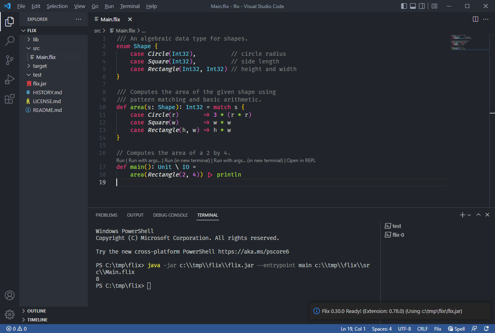

Introduction to Flix
Flix is a principled functional, logic, and imperative programming language developed at Aarhus University, at the University of Waterloo, and by a community of open source contributors.
Flix is inspired by OCaml and Haskell with ideas from Rust and Scala. Flix looks like Scala, but its type system is based on Hindley-Milner. Two unique features of Flix are its polymorphic effect system and its support for first-class Datalog constraints. Flix compiles to efficient JVM bytecode, runs on the Java Virtual Machine, and supports full tail call elimination.
Here are a few Flix programs to illustrate the look and feel of the language:
This program illustrates the use of algebraic data types and pattern matching:
/// An algebraic data type for shapes.
enum Shape {
case Circle(Int32), // circle radius
case Square(Int32), // side length
case Rectangle(Int32, Int32) // height and width
}
/// Computes the area of the given shape using
/// pattern matching and basic arithmetic.
def area(s: Shape): Int32 = match s {
case Circle(r) => 3 * (r * r)
case Square(w) => w * w
case Rectangle(h, w) => h * w
}
// Computes the area of a 2 by 4.
def main(): Unit \ IO =
area(Rectangle(2, 4)) |> println
Here is a Flix program using polymorphic records:
/// Returns the area of the polymorphic record `r`.
/// Note that the use of the type variable `a` permits the record `r`
/// to have labels other than `x` and `y`.
def polyArea[a : RecordRow](r: {x = Int32, y = Int32 | a}): Int32 = r.x * r.y
/// Computes the area of various rectangle records.
/// Note that some records have additional fields.
def polyAreas(): List[Int32] =
polyArea({x = 1, y = 2}) ::
polyArea({x = 2, y = 3, z = 4}) :: Nil
def main(): Unit \ IO =
polyAreas() |> println
and here is one using processes and channels:
/// A function that sends every element of a list
def sendAll(l: List[Int32], o: Sender[Int32]): Unit \ IO =
match l {
case Nil => ()
case x :: xs => Channel.send(x, o); sendAll(xs, o)
}
/// A function that receives n elements
/// and collects them into a list.
def recvN(n: Int32, i: Receiver[Int32]): List[Int32] \ IO =
match n {
case 0 => Nil
case _ => Channel.recv(i) :: recvN(n - 1, i)
}
/// A function that calls receive and sends the result on d.
def wait(i: Receiver[Int32], n: Int32, d: Sender[List[Int32]]): Unit \ IO =
Channel.send(recvN(n, i), d);
()
/// Spawn a process for send and wait, and print the result.
def main(): Unit \ IO =
let l = 1 :: 2 :: 3 :: Nil;
let (s1, r1) = Channel.buffered(100);
let (s2, r2) = Channel.buffered(100);
spawn sendAll(l, s1);
spawn wait(r1, List.length(l), s2);
println(Channel.recv(r2))
Getting Started
You can try Flix online at play.flix.dev.
Installing Flix
Prerequisites: Java
Brew (macOS and Linux)
The recommended way to install Flix on both macOS and Linux is via the flix/tools tap for Homebrew (other ways to install):
brew install flix/tools/flix
🤔 Note: I’m suggesting that we follow Clojure’s lead and create our own Homebrew Tap so that we can have complete control.
Windows
🤔 Note: Decide on what the right approach for Windows is. Probably winget, but we could also create an installer package or use Scoop?
Testing your setup
You can check to see what version of Flix you have installed with the command flix --version which should output:
% flix --version
The Flix Programming Language v0.32.0
Other ways to install Flix
⚠️ TODO: Instructions for how to download and install manually.
Java
⚠️ TODO: Details of which versions of Java Flix supports
Editor Support
Visual Studio Code
The recommended editor for Flix is Visual Studio Code with the Flix Extension:
⚠️ TODO: Further introductory material for VSCode
Projects
🤔 Note: The following is written from the POV of command line usage, but we should have and document VSCode equivalents.
Creating a Flix Project
You can create and run a new Flix project with flix new, for example:
% flix new hello-world
Creating project from template "app" in hello-world
% cd hello-world
% flix run
Hello world!
Anatomy of a Flix Project
This is the structure that the above creates:
Flix treats any directory containing a file called flix.toml as a Flix project. As a minimum, this needs to specify the name of our application and the version of Flix it’s expecting to be used to compile it:
[package]
name = "hello-world"
flix = "0.32.1"
There are two different basic types of Flix project:
-
Applications: Collections of source files and other resources (e.g. HTML files, images, …) which are built into an executable project.
-
Libraries: Collections of source files and other resources which are intended for use within applications (or other libraries).
By default flix new creates an application project, but it can be used to create a library by specifying the lib template: flix new --template lib my-new-library.
🤔 Note: We should allow the creation of user defined templates to automate the creation of more complex projects, e.g. web apps (which in addition to the above would have a
resourcesdirectory,index.html, default routes, etc.).
Building a Flix Project
Components of a Flix Project
A project is built from the following components:
- Source Files: A collection of
.flixfiles containing Flix source code. - Resources: Resources can be any type of file, but typically include:
- HTML, CSS, etc.
- Images
- Data/configiguration (e.g. JSON, CSV, etc.)
- Dependencies: Libraries upon which this project depends. Flix supports two different types of dependency:
- Flix Libraries: Flix library projects which themselves consist of source files, resources, and potentially further dependencies.
- JAR Files: Java libraries packaged as JAR files.
- Configuration: Settings which modify the behaviour of the compiler.
The primary job of flix.toml is, therefore, to specify how we should find the source code, resources, and dependencies that should be used to build our project.
Build Flavours
A project can be built in multiple different flavours. By default these are:
- Production: A production build is used when building a release. Production builds:
- Development: The development build is similar to the production build, but differs from it in ways which make it easier to debug, for example:
- Tests and benchmarks are included in the build.
- Debugging functions and holes are allowed.
- A development build of a web application might allow insecure connections (i.e. over HTTP instead of HTTPS).
- A development build may be configured to communicate with a different instance of a database or third-party service.
A project defines a base set of source files, resources, dependencies, and configuration in its [package] section which applies across all different build flavours. These can then be added to or overridden within [build.prod], [build.dev], etc.
The following shows the default settings:
[package]
source-paths = ["src"]
resource-paths = ["resources"]
[build.prod]
source-paths = ["prod"]
config = { allow-holes = false, allow-debug = false }
[build.dev]
source-paths = ["dev", "test", "bench"]
config = { allow-holes = true, allow-debug = true }
So both production and development builds include all source files within the src directory, and resources within the resources directory. Production builds add the prod directory (so the complete set of source paths is ["src", "prod"]) and disable both holes and debugging functions. Development builds add the dev, test, and bench directories (so the complete set of source paths is ["src", "dev", "test", "bench"]) and enable both holes and debugging functions.
Building
The flix command allows the build flavour to be specified through the --build or -B command line arguments, so the following builds the development version of a project and starts the REPL:
% flix --build dev repl
__ _ _
/ _| | | (_) Welcome to Flix v0.33.0
| |_ | | _ __ __
| _| | | | | \ \/ / Enter an expression to have it evaluated.
| | | | | | > < Type ':help' for more information.
|_| |_| |_| /_/\_\ Type ':quit' or press 'ctrl + d' to exit.
flix>
Which can be shortened to just flix as the default flavour is dev and the default command is repl.
A production JAR would be built with:
% flix --build prod jar
Which can be shortened to just flix jar as the jar command uses the prod flavour by default.
Dependencies
Flix supports two different types of dependency: Flix libraries (Fpkgs) and Jar files. Flix libraries are typically downloaded from GitHub and Jars from Maven (other repositories will be supported in the future).
Specifying Dependencies
Dependencies shared by all build flavours are specified within the [package.dependencies] section of flix.toml. Dependencies specific to a particular build flavour are specified in [build.<flavour>.dependencies], for example:
[package]
name = "example-flix-project"
version = "1.2.3"
flix = "0.31.0"
[package.dependencies]
mvn."org.postgresql/postgresql" = "42.3.3"
mvn."org.eclipse.jetty/jetty-server" = "11.0.11"
fpkg."com.github.paulbutcher/my-flix-library" = "0.3.1"
[build.dev.dependencies]
fpkg."com.github.example/debugging-helper" = "2.3.4"
This defines an application which depends upon two different Maven dependencies: org.postgresql/postgresql and org.eclipse.jetty/jetty-server, plus a single Fpgk: com.github.paulbutcher/my-flix-library. The development build also depends upon an additional Fpkg: com.github.example/debugging-helper.
🤔 Note: In #4380 I proposed that we had “group-id/artifact”.mvn, but I think I’ve convinced myself that the other way around works slightly better. Ultimately it doesn’t really make much difference and we can pick whichever way round we think is best.
Maven Dependencies
Maven dependencies are specified as a maven coordinate of the form groupId/artifactId. In the simple case this maps onto a simple version number, but in the event that you need to deal with subdependency conflicts or reduce the size of the build, you can exclude subdependencies as follows:
[package.dependencies]
mvn."org.eclipse.jetty/jetty-server" = { version = "11.0.11", exclusions = ["org.slf4j/slf4j-api"] }
Maven dependencies are downloaded to your ~/.m2 directory and referenced directly on the classpath (i.e. if two different projects reference the same dependency, it is only downloaded once).
🤔 Note: Ultimately we’ll have to handle all kinds of interesting edge cases like:
- Allowing different maven repositories over and above maven central
- Support for authenticated repos
- Maven proxies
- Ability to configure the local repository
- …
But I suggest that we keep things simple to start with.
Fpgk Dependencies
Flix library dependencies reference a GitHub release specified in the form com.github.<org>/project. The version number references a specific release.
An Fpkg release comprises two files:
- An
.fpkgfile containing the compressed source code for the library. - The library’s
flix.tomlfile which is used to determine metadata for the library.
Flix requires that a library specifies at least the following minimum set of metadata:
- Name
- Description
- Version
- License
- Homepage
Fpkg dependencies are downloaded to your ~/.fpkg directory and referenced directly (i.e. if two different projects reference the same dependency, it is only downloaded once).
🤔 Note: I suspect that we might have to get users to authenticate with GitHub in the same manner as the GitHub CLI because otherwise they’re likely to be rate limited when accessing the GitHub API.
Building Fpkg Dependencies
Imagine that we have a Flix library project with the following structure:
Here are the contents of its flix.toml:
[package]
name = "example-flix-library"
version = "2.3.4"
flix = "0.31.0"
license = "MIT OR Apache-2.0"
description = """
An example of a Flix library, distributed as an fpkg
"""
homepage = "https://github.com/org-name/example-flix-library"
[package.dependencies]
mvn."com.example/some-lib" = "1.2.3"
fpkg."com.example/another-flix-library" = "2.3.4"
[build.dev.dependencies]
fpkg."com.github.example/debugging-helper" = "3.4.5"
An Fpkg can be built from this with the following command:
% flix fpkg
Because the fpkg command uses the prod build flavour by default, the resulting package will contain the contents of the src and resources directories, but not the test or dev directories:
The Fpkg can be uploaded to a GitHub release with:
% flix release
🤔 Note: We’ll definitely need to user to authenticate with GitHub for this!
Semantic Versioning
Flix is opinionated on versioning and enforces semantic versioning for Fpkg dependencies. In other words Flix assumes that version 1.3.4 of a library is backwardly compatible with (say) version 1.2.3 but that 2.1.2 is not.
A future version of the compiler will automatically detect and forbid changes to a library’s public API which break semantic versioning. So it will not allow any changes to the public API for patch releases (e.g. from 1.2.3 to 1.2.4), and will not allow changes that are not backwardly compatible for minor releases (e.g. from 1.2.3 to 1.3.0).
Dependency Resolution
Unlike (for example) npm or Cargo version numbers in flix.html are specified exactly: you get precisely the version of the library referenced. There are no version ranges, tildes, carets, or wildcards.
In the event that two dependencies both depend on the same sub-dependency, the most recent version specified will be used, as long as the versions they use are compatible according to semantic versioning.
For example, imagine that this is the [package.dependencies] section of our flix.toml:
[package.dependencies]
fpgk."com.example/frobnicate" = "1.2.3"
fpkg."com.example/munge" = "2.0.1"
Let’s imagine that both Frobnicate and Munge depend upon a third library “Loggify”. Perhaps Frobnicate depends upon version 1.0.1 and Munge depends upon version 1.2.3. In this case, Flix will download and used version 1.2.3 because it’s the most recent version and is backwards compatible with 1.0.1.
But imagine that we upgrade to release 2.0.0 of Frobnicate which now depends upon Loggify 2.1.0. Now Flix will raise an error because 2.1.0 is not backwardly compatible with the version of Loggify being used by Munge.
If you find yourself in this situation, you will either have to wait for your dependencies to be upgraded or, if testing demonstrates that the most recent version of the library works for your situation, you can override Flix’s default behaviour by excluding the sub-dependency:
[package.dependencies]
fpgk."com.example/frobnicate" = { version = "2.0.0", exclusions = ["com.example/loggify"] }
fpkg."com.example/munge" = "2.0.1"
Utilities
You can visualise a project’s dependency tree with:
% flix dependencies
com.example/frobnicate: 2.0.0
- com.example/loggify: 2.1.0 (excluded)
com.example/munge: 2.0.1
- com.example/loggify: 1.2.3
You can see whether newer versions of dependencies are available with:
% flix outdated
com.example.frobnicate:
Version in use: 1.2.3
More recent patch version available: 1.2.4
More recent minor version available: 1.3.0
And you can automatically update flix.toml with flix upgrade:
% flix upgrade --help
Usage: flix upgrade [--patch|--minor|--major]
Automatically upgrades dependencies to the most recent patch, minor, or major versions.
Project Reference
Package Settings
The following is a list of settings that can be set at a package level.
name
The name of the project.
Required for both application and library projects.
Used to create the name of the Jar of Fpkg file, so must be of a form that’s compatible with major filesystems.
version
The version number of the project.
Required for library projects.
Must follow semantic versioning conventions. Note: this may be enforced by a future version of the compiler.
flix
The version of Flix to be used when compiling.
Required for both library and application projects.
license or license-file
The license (or licenses) that apply this this package.
Required for library projects.
Either license (as an SPDX 2.1 license expression) or a license-file referencing a license text file.
description
A textual description of the package.
Required for library projects.
homepage
The URL for the project.
Required for library projects.
source-paths
Default: ["src"]
A list of directories to be used to search for .flix files.
resource-paths
Default: ["resources"]
A list of directories containing resources (files which will be included in the Jar or Fpkg).
🤔 Note: There are probably other things we could add to this list (e.g. source code repository URL, authors, …) but I think that this is a good enough starting point.
config
Default: { allow-holes = false, allow-debug = false }
Configures compiler settings. Typically specified within build flavours (see below).
Build Flavor-specfic Settings
Settings specific to a particular build flavour can be set by creating a [build.<flavour>] section. Settings within a build flavour override package settings, apart for array-valued settings (e.g. src-paths and resource-paths) where they add to the equivalent package setting.
The default build flavours are prod and dev with the following defaults:
[build.prod]
source-paths = ["prod"]
config = { allow-holes = false, allow-debug = false }
[build.dev]
source-paths = ["dev", "test", "bench"]
config = { allow-holes = true, allow-debug = true }
Data Types
Flix comes with a collection of built-in data types,
such as booleans, floats and integers, and
compound types, such as tuples and records.
Moreover, the standard library defines types such as
Option[a], Result[t, e], List[a], Set[a],
and Map[k, v].
In addition to these types, Flix allows programmers to define their own types, including enumerated types, recursive types, and polymorphic types.
Flix also supports type aliases (new types).
Primitive Types
Flix supports the usual primitive types:
| Type | Syntax | Description |
|---|---|---|
| Unit | () | The unit value. |
| Bool | true, false | A boolean value. |
| Char | 'a', 'b', 'c' | A character value. |
| Float32 | 0.0f32, 21.42f32, -21.42f32 | A 32-bit floating point integer. |
| Float64 | 0.0f64, 21.42f64, -21.42f64 | A 64-bit floating point integer. |
| Int8 | 0i8, 1i8, -1i8, 127i8, -128i8 | A signed 8-bit integer. |
| Int16 | 0i16, 123i16, -123i16 | A signed 16-bit integer. |
| Int32 | 0i32, 123i32, -123i32 | A signed 32-bit integer. |
| Int64 | 0i64, 123i64, -123i64 | A signed 64-bit integer. |
| String | "hello", "world" | A string value. |
| BigInt | 0ii, 123ii, -123ii | An arbitrary precision integer. |
| BigDecimal | 0.0ff, 123.45ff, -123.45ff | An arbitrary precision decimal. |
Float64 and Int32 values can be
written without suffix, i.e. 123.0f64 can simply be written
as 123.0 and 123i32 can be written as 123.
Built-in Literals
Flix has built-in syntactic sugar for lists, sets, and maps.
List Literals
A list literal is written using the infix ::
constructor.
For example:
1 :: 2 :: 3 :: Nil
which is syntactic sugar for:
Cons(1, Cons(2, Cons(3, Nil)))
Set Literals
A set literal is written using the notation
Set#{v1, v2, ...}.
For example:
Set#{1, 2, 3}
which is syntactic sugar for:
Set.insert(1, Set.insert(2, Set.insert(3, Set.empty())))
Map Literals
A map literal is written using the notion
Map#{k1 => v1, k2 => v2, ...}.
For example:
Map#{1 => "Hello", 2 => "World"}
which is syntactic sugar for:
Map.insert(1, "Hello", Map.insert(2, "World", Map.empty()))
Tuples
A tuple is a product of values.
A tuple is written with parentheses.
For example, here is a 2-tuple (a pair) of an
Int32 and a Bool:
(123, true)
The type of the tuple is (Int32, Bool).
We can destructure a tuple using pattern matching. For example:
let t = ("Lucky", "Luke", 42, true); // 4-tuple
let (fstName, lstName, age, male) = t;
lstName
evaluates to the string "Luke".
The Flix prelude defines the fst and snd
functions:
let t = (1, 2);
let x = fst(t); // x = 1
let y = snd(t) // y = 2
which are useful when working with 2-tuples (i.e. pairs). For example:
let l = (1, 1) :: (2, 2) :: Nil; // has type List[(Int32, Int32)]
List.map(fst, l) // has type List[Int32]
which evaluates to a list that contains all the
first components of the list l.
Enums
Enumerated Types
Enumerated types are used to define a type that has a finite (enumerated) set of values. Enumerated types are useful for things such as modeling compass directions, the cards in a deck, and the days in a week.
For example, here is an enumeration of the days in a week:
enum Weekday {
case Monday,
case Tuesday,
case Wednesday,
case Thursday,
case Friday,
case Saturday,
case Sunday
}
Here Monday, Tuesday and so on are referred to as
the constructors of the enum.
We can refer to a weekday as Monday or
Weekday.Monday.
The latter is required if we have multiple enums in
scope with similarly named constructors.
We can use pattern matching to destruct an enum value. For example:
enum Animal {
case Cat,
case Dog,
case Giraffe
}
def isTall(a: Animal): Bool = match a {
case Cat => false
case Dog => false
case Giraffe => true
}
The function isTall takes a value of type Animal
and performs a pattern match on it.
If the value is Giraffe the function returns
true.
Otherwise it returns false.
Flix guarantees that pattern matches are exhaustive,
i.e. that all cases have been covered.
It is a compile-time error if a pattern match is
non-exhaustive.
A pattern match can always be made exhaustive by
adding a default case as the last case.
A default case is written with an underscore
case _ => ???.
Recursive Types
Recursive types are used to define types that are self-referential.
For example, we can define a binary tree of integers as follows:
enum Tree {
case Leaf(Int32),
case Node(Tree, Tree)
}
A tree is either a Leaf with an Int32 value or an
internal Node with a left and a right sub-tree.
Note that the definition of Tree refers to itself.
We can write a function, using pattern matching, to compute the sum of all integers in such a tree:
def sum(t: Tree): Int32 = match t {
case Leaf(x) => x
case Node(l, r) => sum(l) + sum(r)
}
The sum function pattern matches on a tree value.
If the tree is a leaf its value is simply returned.
Otherwise the function recurses on both subtrees and
adds their results.
Polymorphic Types
Polymorphic types are types parameterized by other types. For example, we can write:
enum Bottle[a] {
case Empty,
case Full(a)
}
def isEmpty[a](b: Bottle[a]): Bool = match b {
case Empty => true
case Full(_) => false
}
Here the Bottle type is parameterized by the type
parameter a.
In Flix, type parameters, like ordinary parameters
are always written in lowercase.
The Bottle type has two cases: either the bottle
is empty (and contains no value) or it is full (and
contains one value of type a).
The isEmpty function takes a bottle, type
parameterized by a, and determines if the bottle
is empty.
The careful reader might have noticed that Bottle
is equivalent to the more well-known Option type.
In general, polymorphic types can have more than one
type argument.
For example, the standard library implement of the
Result has two type parameters:
enum Result[t, e] {
case Ok(t),
case Err(e)
}
Shorthand Enum Syntax
A typical enum may look like:
enum Weekday {
case Monday,
case Tuesday,
case Wednesday,
case Thursday,
case Friday,
case Saturday,
case Sunday
}
The same enum can also be declared as:
enum Weekday {
case Monday, Tuesday, Wednesday, Thursday, Friday, Saturday, Sunday
}
This shorthand syntax is always available, but should only be used for simple enums.
Singleton Enum Syntax
An enum with a single case:
enum USD {
case USD(Int32)
}
can be shortened to:
enum USD(Int32)
Type Aliases
Type aliases introduces a short-hand name for a type. For example:
///
/// A type alias for a map from keys of type `k`
/// to values of type `Result[v, String]`
///
type alias M[k, v] = Map[k, Result[v, String]]
def foo(): M[Bool, Int32] = Map#{true => Ok(123)}
A type alias does not define a new distinct type. Rather a type alias is simply a syntactic short-hand for a (usually complex) type.
The Flix compiler expands type aliases before type checking. Consequently, type errors are always reported with respect to the actual underlying types.
Note: A type alias cannot be recursively defined in terms of itself. The Flix compiler will detect and report such recursive cycles.
Functions
Functions and higher-order functions are the key building block of a functional programming language.
In Flix, top-level functions are defined with the
def keyword.
For example:
def add(x: Int32, y: Int32): Int32 = x + y + 1
A definition consists of the function name followed by an argument list, the return type, and the function body. Although Flix supports type inference, top-level function definitions must declare the type of their arguments and their return type.
In Flix, all function arguments and local variables must be used. If a function argument is not used it must be prefixed with an underscore to explicitly mark it as unused.
First-Class and Higher-Order Functions
A higher-order function is a function that takes a parameter which is itself a function. For example:
def twice(f: Int32 -> Int32, x: Int32): Int32 = f(f(x))
Here the twice function takes two arguments, a
function f and an integer x, and applies f to
x two times.
We can pass a lambda expression to the twice
function:
twice(x -> x + 1, 42)
which evaluates to 44 since 42 is incremented
twice.
We can also define a higher-order function that requires a function which takes two arguments:
def twice(f: (Int32, Int32) -> Int32, x: Int32): Int32 =
f(f(x, x), f(x, x))
which can be called as follows:
twice((x, y) -> x + y, 42)
We can call a higher-order function with a top-level function as follows:
def inc(x: Int32): Int32 = x + 1
def twice(f: Int32 -> Int32, x: Int32): Int32 = f(f(x))
twice(inc, 42)
Function Type Syntax
Depending on the number of arguments to a function, the syntax for the function type differs:
Unit -> Int32 // For nullary functions
Int32 -> Int32 // For unary functions
(Int32, Int32, ...) -> Int32 // For the rest
Function Composition
Flix supports several operators for function composition and pipelining:
let f = x -> x + 1;
let g = x -> x * 2;
let h = f >> g; // equivalent to x -> g(f(x))
Here >> is forward function composition.
We can also write function applications using the pipeline operator:
List.range(1, 100) |>
List.filter(x -> x mod 2 == 0) |>
List.map(x -> x * x) |>
println;
Here x |> f is equivalent to the function
application f(x).
Curried by Default
Functions are curried by default. A curried function can be called with fewer arguments than it declares returning a new function that takes the remainder of the arguments. For example:
def sum(x: Int32, y: Int32): Int32 = x + y
def main(): Unit \ IO =
let inc = sum(1);
inc(42) |> println
Here the sum function takes two arguments, x and
y, but it is only called with one argument inside
main.
This call returns a new function which is
similar to sum, except that in this function x
is always bound to 1.
Hence when inc is called with 42 it returns 43.
Currying is useful in many programming patterns.
For example, consider the List.map function.
This function takes two arguments, a function of
type a -> b and a list of type List[a], and
returns a List[b] obtained by applying the
function to every element of the list.
Now, if we combine currying with the pipeline
operator |> we are able to write:
def main(): Unit \ IO =
List.range(1, 100) |>
List.map(x -> x + 1) |>
println
Here the call to List.map passes the function
x -> x + 1 which returns a new function that
expects a list argument.
This list argument is then supplied by the pipeline
operator |> which, in this case, expects a list
and a function that takes a list.
Pipelines
Flix supports the pipeline operator |> which is
simply a prefix version of function application (i.e.
the argument appears before the function).
The pipeline operator can often be used to make functional code more readable. For example:
let l = 1 :: 2 :: 3 :: Nil;
l |>
List.map(x -> x * 2) |>
List.filter(x -> x < 4) |>
List.count(x -> x > 1)
Here is another example:
"Hello World" |> String.toUpperCase |> println
Operators
Flix has a number of built-in unary and infix operators. In addition Flix supports infix function application by enclosing the function name in backticks. For example:
123 `sum` 456
is equivalent to the normal function call:
sum(123, 456)
In addition, a function named with an operator name (some combination of +, -, *, <, >, =, !, &, |, ^, and $) can also be used infix. For example:
def <*>(x: Int32, y: Int32): Int32 = ???
can be used as follows:
1 <*> 2
Pure, Impure, and Effect Polymorphic Functions
In Flix every function is pure, impure, or effect polymorphic.
The Flix type and effect system ensures that a pure function always returns the same result when given the same arguments and that it cannot have (observable) side effects.
In Flix every function definition is implicitly
marked as Pure.
For example, the function definition:
def add(x: Int32, y: Int32): Int32 = x + y
is actually equivalent to:
def add(x: Int32, y: Int32): Int32 \ {} = x + y
Note the annotation for Pure is \ {}.
A function that prints to the console is Impure
and must be marked with \ IO:
def addAndPrint(x: Int32, y: Int32): Int32 \ IO =
let r = x + y;
println(r);
r
since the type signature of the library function
println specifies that it is Impure.
The purity (or impurity) of a higher-order function
may depend on the purity of its argument(s).
For example, whether List.map is pure or impure
depends on whether function we map is pure or
impure.
Fortunately Flix can model such behavior using
effect polymorphism.
For example:
def map(f: a -> b \ ef, l: List[a]): List[b] \ ef = ???
Here the signature of map captures that if the
function argument f has type a -> b with effect
ef then the effect of map itself is ef.
This means that if map is called with a pure
(resp. impure) function argument then the overall
expression is pure (resp. impure).
For example:
List.map(x -> x + 123, l) // pure
List.map(x -> println(x), l) // impure
Design Note
The Flix standard library enforces several program invariants using purity. For example, in Flix, the
EqandOrdertype classes require that their operations are pure. This ensures that collections, such as lists, sets, and maps, do not leak internal implementation details.
Immutable Data
Flix is a functional programming language and the bread-and-butter of the language is in its immutable data types. We have already seen enumerated types. In this chapter, we look at lists and records.
Lists
The bread and butter of functional programming is
list processing.
A list is either the empty list, written as Nil,
or a cons cell, written as x :: xs where x is
the head element and xs is the tail of the list.
The List type is polymorphic so you can have a
list of integers, written as List[Int32], or a
list of strings written as List[String].
The List type and list operations are part of the
Flix standard library.
We write the empty list as follows:
Nil
We can construct a list of strings with the strings
"Hello" and "World" as follows:
"Hello" :: "World" :: Nil
Given a list there are many useful operations we can perform on it.
For example, we can compute the length of a list as follows:
List.length(1 :: 2 :: 3 :: Nil)
We can also reverse the order of elements in a list:
List.reverse(1 :: 2 :: 3 :: Nil)
We can append two lists using the List.append
function as follows:
let xs = (1 :: 2 :: 3 :: Nil);
let ys = (4 :: 5 :: 6 :: Nil);
List.append(xs, ys)
Or, alternatively, we can use the built-in append
operator ::: as follows:
let xs = (1 :: 2 :: 3 :: Nil);
let ys = (4 :: 5 :: 6 :: Nil);
xs ::: ys
Flix has an extensive collection of functions to operate on lists.
Here are some of the most common:
List.count(x -> x == 1, 1 :: 2 :: 3 :: Nil);
List.filter(x -> x == 1, 1 :: 2 :: 3 :: Nil);
List.map(x -> x + 1, 1 :: 2 :: 3 :: Nil);
List.foldLeft((x, y) -> x + y, 0, 1 :: 2 :: 3 :: Nil)
And here are some more exotic functions:
List.intersperse("X", "a" :: "b" :: "c" :: Nil)
which inserts "X" between every element in the
list.
let l1 = "X" :: "Y" :: Nil;
let l2 = ("a" :: "b" :: Nil) :: ("c" :: "d" :: Nil) :: Nil;
List.intercalate(l1, l2)
which inserts the list l1 between every element in
the list l2.
We can write our own recursive functions to operate on lists.
For example, here is an implementation of the map
function:
///
/// Returns the result of applying `f` to every element in `l`.
/// That is, the result is of the form: `f(x1) :: f(x2) :: ...`.
///
pub def map(f: a -> b \ ef, l: List[a]): List[b] \ ef = match l {
case Nil => Nil
case x :: xs => f(x) :: map(f, xs)
}
Records
Flix supports row polymorphic extensible records. Flix records are immutable (but may contain mutable reference cells).
Record Literals
A record literal is written with curly braces:
{ x = 1, y = 2 }
which has the record type
{ x = Int32, y = Int32 }.
The order of fields in a record does not matter, hence the above record is equivalent to the record:
{ y = 2, x = 1 }
which has the record type
{ y = Int32, x = Int32 }.
This type is equivalent to the record type
{ x = Int32, y = Int32 }.
That is, the order of fields within a record type do
not matter.
Field Access
We can access the field of a record using a dot:
let p = { x = 1, y = 2 };
p.x + p.y
The Flix type system ensures that we cannot access a field that does not exist.
Records are immutable. A record, once constructed, cannot have the values of any of its fields changed.
Field Update
While records are immutable, we can construct a new record with an updated field value:
let p1 = { x = 1, y = 2 };
let p2 = { x = 3 | p1 };
p1.x + p2.x
The expression { x = 3 | p1 } updates the record
p1 with a new value of its x field.
Note that updating a field requires that the field
exists on the record (!) A record cannot be
updated with a new field, but it can be extended
with a new field, as we shall see later.
Record Extension
We can add a new field to an existing record as follows:
let p1 = { x = 1, y = 2 };
let p2 = { +z = 3 | p1 };
p1.x + p1.y + p2.z
Here the expression { +z = 3 | p1 } extends the
record p1 with a new field z such that the
result has three fields: x, y, and z all of
which are of Int32 type.
Record Restriction
Similarly to record extension, we can also remove a field from a record:
let p1 = { x = 1, y = 2 };
let p2 = { -y | p1 };
Here the record p2 has the same fields as p1
except that the y field has been removed.
Row Polymorphism: Open and Closed Records
A function may specify that it requires a record with two fields:
def f(r: {x = Int32, y = Int32}): Int32 = r.x + r.y
We can call this function with the records
{ x = 1, y = 2 } and { y = 2, x = 1 }, but we
cannot call it with the record
{ x = 1, y = 2, z = 3 } since the signature of f
demands a record with exactly two fields: x and
y.
We say that the record r is closed.
We can lift this restriction by using row polymorphism:
def g(r: {x = Int32, y = Int32 | s}): Int32 = r.x + r.y
We can call this function with any record as long
as it has x and y fields which are of type
Int32.
We say that the record type of r is open.
Named Parameters with Records
When a function has multiple parameters that share
the same type, it is easy to get confused about the
right argument order.
For example, what does
String.contains("Hello","Hello World") return?
What does String.contains("Hello World", "Hello")
return?
A common solution to this problem is to use named parameters. Flix supports a form of named parameters building on records. For example, we can write a function translate to translate from one language to another as follows:
def translate(from: {from = Language}, to: {to = Language}, text: String): String = ???
We can call this function as follows:
translate({from = English}, {to = French}, "Where is the library?")
Since such verbosity gets tedious, we can also use the syntactic sugar:
translate(from = English, to = French, "Where is the library?")
which is equivalent to the above.
Illegal Record Field: length
A record field cannot be named length.
The reason is that the expression:
a.length
is understood as accessing the length of the array
a, not as accessing a field named length on a
record a.
Mutable Data
We now turn our attention to mutable data.
All mutable data is built from two the basic mutable data types:
- References
- Arrays
References
Flix supports references in the ML-tradition.
The three key operations are ref e, deref e, and
e := e.
The ref e operation allocates a reference cell in
the heap and returns its location, the deref
operation dereferences a location and returns the
content of a reference cell, and finally the
assigment := operation changes the value
of a reference cell. Informally, a reference cell can
be thought of as an “object” with a single field that
can be changed.
All operations on references are impure.
As such, all functions that use references must be
marked with annotation \ IO for Impure
or be casted to Pure.
Allocation
A reference cell is allocated as follows:
ref 42
which evaluates to a value of type Ref[Int32] which
is a reference (pointer) to a single memory cell that
holds the value 42.
Dereference
A reference cell is accessed (de-referenced) as follows:
let l = ref 42;
deref l
which evaluates to 42 as expected.
Assignment
A reference cell can have its value updated as follows:
let l = ref 42;
l := 84;
deref l
which evaluates to 84 as expected.
Example: A Simple Counter
The following program models a simple counter that can be incremented:
enum Counter {
case Counter(Ref[Int32])
}
def newCounter(): Counter \ IO = Counter(ref 0)
def getCount(c: Counter): Int32 \ IO =
let Counter(l) = c;
deref l
def increment(c: Counter): Unit \ IO =
let Counter(l) = c;
l := (deref l) + 1
def f(): Unit \ IO =
let c = newCounter();
increment(c);
increment(c);
increment(c);
getCount(c) |> println
Note that the newCounter, getCount, increment
and f functions must all be marked as Impure
with the annotation \ IO.
Aliasing and References to References
References naturally support aliasing since that is exactly their purpose. For example:
let l1 = ref 42;
let l2 = l1;
l2 := 84;
deref l1
Evaluates to 84 because the reference cell that
l1 points to is modified through the alias l2.
References can point-to references as the following example illustrates:
let l1 = ref 42;
let l2 = ref l1;
deref (deref l2)
Evaluates to 42 as expected.
Design Note
Flix does not support any notion of global mutable state. If you need to maintain a program-wide counter (or other mutable state) then you have to allocate it in the main function and explicitly thread it through the program.
Mutable Tuples and Records
Flix tuples and records are immutable. However, tuples and records may contain mutable references.
For example, here is a pair that contains two mutable references:
let p = (ref 1, ref 2);
fst(p) := 123
The type of the pair is (Ref[Int32], Ref[Int32]).
The assignment does not change the pair itself (it is
immutable), but rather changes the value of the
reference cell in the first component of the pair.
Similarly, here is a record that contains two mutable references:
let r = { fstName = ref "Lucky", lstName = ref "Luke" };
r.fstName := "Unlucky"
The type of the record is
{ fstName = Ref[String], lstName = Ref[String] }.
Again, the assignment does not change the record
itself, but rather changes the value of the reference
cell corresponding to the fstName field.
Arrays
While Flix recommends the use of immutable data structures (such as immutable lists, sets, and maps), mutable arrays may be useful for performance critical code.
We recommend that arrays are used sparingly and that when possible their use is hidden as an implementation detail. For example, the Flix Datalog engine uses arrays internally but exposes a functional (immutable) interface.
Flix uses monomorphization and consequently primitive
arrays are not boxed.
For example, the representation of an Array[Int32]
is compact and efficient.
All operations on arrays are impure.
As such, all functions that use arrays must be marked as
impure (with annotation \ IO) or be casted to pure.
However, accessing the length of an array is pure
since the size of an array cannot change after it has
been created.
Arrays should only be used for low-level code.
The MutList data structure, available in the
standard library, provides a mutable
dynamically-expanding data structure similar to
java.util.ArrayList. Its implementation is backed
by an array that is dynamically resized and it
provides amortized O(1) push operations.
Array Literals
An array literal is of the form [e1, e2, ... en].
For example, the expression:
[1, 2, 3, 4]
evaluates to an array with the four elements:
1, 2, 3, 4.
In some cases it is useful to allocate a large array filled with the same value. The expression:
["Hello World"; 100]
evaluates to an array of length 100 where every entry
contains the string "Hello World".
Design Note
Flix does not allow the allocation of an array without assigning a “default value” to each entry in the array.
Reading and Writing from Arrays
Arrays can be accessed and updated using standard syntax. For example:
let a = [0; 10];
a[0] = 21;
a[1] = 42;
a[0] + a[1]
evaluates to 63, as expected.
Array Slicing
Arrays can be sliced. Slicing an array (shallowly) copies a subrange of the array. For example:
let a = [1, 2, 3, 4, 5];
a[2..4]
evaluates to the array [3, 4].
The start or end index may be omitted. For example:
let a = [1, 2, 3, 4, 5];
let a1 = a[2..]; // evaluates to [3, 4, 5]
let a2 = a[..4] // evaluates to [1, 2, 3, 4]
If both the start and end index are omitted the entire array is copied. For example:
let a = [1, 2, 3, 4, 5];
a[..]
evaluates to the (copied) array [1, 2, 3, 4, 5].
Design Note
Slicing an array using the same start and end index returns the empty array. For example,
[0, 1, 2, 3][2..2]evaluates to[].
Warning
Slicing with negative indices is undefined and results in runtime errors.
Array Length
The length of an array is accessed as follows:
let a = [1, 2, 3, 4, 5];
a.length
which evaluates to 5.
Control Structures
The Flix control structures are:
If-then-else
Flix supports the usual if-then-else expression:
if (1 == 1) "Hello" else "World"
which evaluates to Hello.
But if guards are also supported in other parts of the language.
Guarded Pattern Matches
We can use an if-guard in a pattern match:
def isSquare(s: Shape): Bool = match s {
case Rectangle(h, w) if h == w => true
case _ => false
}
Guarded Datalog Rules
We can use an if-guard in a Datalog rule:
Path(x, z) :- Path(x, y), Edge(y, z), if x != z.
Pattern Matching
Let Pattern Match
In addition to the pattern match construct, a
let-binding can be used to destruct a value.
For example:
let (x, y, z) = (1, 2, 3)
Binds the variables x, y, and z to the values
1, 2, and 3, respectively.
Any exhaustive pattern may be used in a let-binding. For example:
let (x, Foo(y, z)) = (1, Foo(2, 3))
is legal provided that the Foo constructor belongs
to a type where it is the only constructor.
The following let-bindings are illegal because they are not exhaustive:
let (1, 2, z) = ...
let Some(x) = ...
The Flix compiler will reject such non-exhaustive patterns.
Match Lambdas
Pattern matches can also be used with lambda expressions. For example:
List.map(match (x, y) -> x + y, (1, 1) :: (2, 2) :: Nil)
is equivalent to:
List.map(w -> match w { case (x, y) => x + y }, (1, 1) :: (2, 2) :: Nil)
As for let-bindings, such pattern matches must be exhaustive.
Note the difference between the two lambda expressions:
let f = (x, y, z) -> x + y + z + 42i32
let g = match (x, y, z) -> x + y + z + 42i32
Here f is a function that expects three Int32
arguments,whereas g is a function that expects one
three tuple (Int32, Int32, Int32) argument.
Let* (Do-notation)
Flix supports a feature similar to do-notation in Haskelland for-comprehensions in Scala.
The following monadic code:
use Option.flatMap;
let o1 = Some(21);
let o2 = Some(42);
flatMap(x -> flatMap(y -> Some(x + y), o2), o1)
May be expressed more concisely as:
use Option.flatMap;
let* o1 = Some(21);
let* o2 = Some(42);
Some(o1 + o2)
where each let* corresponds to a flatMap use.
For-Each and For-Yield
Note: This feature is experimental and not yet intended for use.
In Flix, as in other functional programming languages, most iteration is expressed either through recursion or with combinators (e.g. map or foldLeft).
That said, Flix has syntactic sugar for two common types of loops: for-each and for yield.
For Each
The for-each construct is useful for iterating over a collection
and apply some transformation to each element and works particularly
well with mutable collections.
This is due to the fact that the for-each loop is actually just
syntactic sugar for a call to Iterable.foreach which has return
type Unit.
Thus, for the loop to be useful the body of the loop should have an effect.
However, before going any further an example is in order.
To use the for-each loop an instance of Iterable on the collection is required.
For this example we will use a MutList.
def main(): Unit & Impure = region r {
use MutList.push!;
let l = new MutList(r)
!> push!(1)
!> push!(2)
!> push!(3);
foreach (x <- l)
println(x)
}
For Yield
Flix also supports a for-yield construct which is similar to Scala’s for-comprehensions
or to Haskell’s list comprehension. The for-yield construct is simply syntactic sugar
for uses of point and flatMap (which requires an instance of the Monad type class).
The for-yield construct also supports a guard-expression which, when used,
additionally requires an instance of the MonadZero type class.
The for-yield expression:
let l1 = 1 :: 2 :: Nil;
let l2 = 1 :: 2 :: Nil;
for (x <- l1; y <- l2)
yield (x, y)
evaluates to the list:
(1, 1) :: (1, 2) :: (2, 1) :: (2, 2) :: Nil
The for-yield expression:
let l1 = 1 :: 2 :: Nil;
let l2 = 1 :: 2 :: Nil;
for (x <- l1; y <- l2; if x < y)
yield (x, y)
evaluates to the list:
(1, 2) :: Nil
We can use for-yield on any data type which implements the Monad type class. For example, we can iterate through non-empty lists:
let l1 = Nel(1, 2 :: Nil);
let l2 = Nel(1, 2 :: Nil);
for (x <- l1; y <- l2)
yield (x, y)
which evaluates to the non-empty list:
Nel((1, 1), (1, 2) :: (2, 1) :: (2, 2) :: Nil)
Note: We cannot use an
if-guard with a non-empty list because such anif-guard requires an instance of theMonadZerotype class which is not implemented by non-empty list. Intuitively, we cannot use a filter in combination with a data structures that cannot be empty.
Concurrency with Channels and Processes
Flix supports CSP-style concurrency with channels and processes inspired by Go and Rust.
Spawning Processes
We can spawn a process with the spawn keyword:
spawn (1 + 2)
This spawns a process that computes 1 + 2 and
throws the result away.
The spawn expression always returns Unit.
We can spawn any expression, but we typically spawn
functions to run in a new process:
def sum(x: Int32, y: Int32): Int32 = x + y
def main(): Unit \ IO = spawn sum(1, 2)
Communicating with Channels
To communicate between processes we use channels. A channel allows two or more processes to exchange data by sending immutable messages to each other.
A channel comes in one of two variants: buffered or unbuffered.
A buffered channel has a size, set at creation time, and can hold that many messages. If a process attempts to put a message into a buffered channel that is full, then the process is blocked until space becomes available. If, on the other hand, a process attempts to get a message from an empty channel, the process is blocked until a message is put into the channel.
An unbuffered channel works like a buffered channel of size zero; for a get and a put to happen both processes must rendezvous (block) until the message is passed from sender to receiver.
Here is an example of sending and receiving a message over a channel:
def main(): Int32 \ IO =
let (s, r) = Channel.unbuffered();
spawn Channel.send(42, s);
Channel.recv(r)
Here the main function creates an unbuffered
channel which returns Sender s and a Receiver r channels,
spawns the send function, and waits
for a message from the channel.
As the example shows, a channel consists of two end points:
the Sender and the Receiver. As one would expect,
messages can only be send using the Sender, and only
received using the Receiver.
Selecting on Channels
We can use the select expression to receive a
message from a collection of channels.
For example:
def meow(s: Sender[String]): Unit \ IO = Channel.send("Meow!", s)
def woof(s: Sender[String]): Unit \ IO = Channel.send("Woof!", s)
def main(): Unit \ IO =
let (s1, r1) = Channel.buffered(1);
let (s2, r2) = Channel.buffered(1);
spawn meow(s1);
spawn woof(s2);
select {
case m <- recv(r1) => m
case m <- recv(r2) => m
} |> println
Many important concurrency patterns such as
producer-consumer and load balancers can be expressed
using the select expression.
Selecting with Default
In some cases, we do not want to block until a message arrives, potentially waiting forever. Instead, we want to take some alternative action if no message is readily available. We can achieve this with a default case as shown below:
def main(): String \ IO =
let (_, r1) = Channel.buffered(1);
let (_, r2) = Channel.buffered(1);
select {
case _ <- recv(r1) => "one"
case _ <- recv(r2) => "two"
case _ => "default"
}
Here a message is never sent to r1 nor r2.
The select expression tries all cases, and if no
channel is ready, it immediately selects the default
case.
Hence using a default case prevents the select
expression from blocking forever.
Selecting with Timeouts
As an alternative to a default case, we can use
tickers and timers to wait for pre-defined
periods of time inside a select expression.
For example, here is a program that has a slow
function that takes a minute to send a message on
a channel, but the select expression relies on
Channel.timeout to only wait 5 seconds before
giving up:
def slow(s: Sender[String]): Unit \ IO =
Thread.sleep(Time/Duration.fromSeconds(60));
Channel.send("I am very slow", s)
def main(): Unit \ IO =
let (s, r) = Channel.buffered(1);
spawn slow(s);
let timeout = Channel.timeout(Time/Duration.fromSeconds(5));
select {
case m <- recv(r) => m
case _ <- recv(timeout) => "timeout"
} |> println
This program prints the string "timeout" after five
seconds.
Parallelism
We have seen how the spawn expression allow us to evaluate an expression in another thread:
spawn (1 + 2)
This allows us to write both concurrent and parallel programs.
The downside is that we must manually coordinate communication between threads using channels.
If want parallelism, but not concurrency, a more light-weight approach is to use the par expression.
The par expression:
par (1 + 2, 3 + 4)
evaluates 1 + 2 and 3 + 4 in parallel and returns a tuple with the result.
If we have expressions e1, e2, and e3 and we want evaluate them in parallel, we can write:
let (x, y, z) = par (e1, e2, e3)
which will spawn a thread for each of e1, e2, and e3 and bind the result to the local variables x, y, and z.
For convenience, Flix also offers the par-yield construct:
par (x <- e1; y <- e2; z <- e3)
yield x + y + z
which evaluates e1, e2, and e3 in parallel, binds their results to x, y, and z, and returns their sum.
We can use par-yield to write a parallel List.map function:
def parMap(f: a -> b, l: List[a]): List[b] = match l {
case Nil => Nil
case x :: xs =>
par (r <- f(x); rs <- parMap(f, xs))
yield r :: rs
}
This function will evaluate f(x) and parMap(f, xs) in parallel. Thus each recursive call spawns a new thread.
Effect System
The Flix type and effect system separates pure and impure expressions. A pure expression is guaranteed to be referentially transparent. A pure function always returns the same value when given the same argument(s) and cannot have any (observable) side-effects.
For example, the following expression is of type
Int32 and is pure (marked with \ {}):
1 + 2 : Int32 \ {}
whereas the following expression is impure (marked with \ IO):
println("Hello World") : Unit \ IO
A higher-order function can specify that a function argument must be pure, impure, or that it is effect polymorphic.
For example, the definition of Set.exists requires
that its function argument f is pure:
// The syntax a -> Bool is short-hand for a -> Bool \ {}
def exists(f: a -> Bool, s: Set[a]): Bool = ???
The requirement that f must be pure ensures that
implementation details do not leak.
For example, since f is pure it cannot be used to
determine in what order the elements of the set are
traversed.
If f was impure such details could leak, e.g. by
passing a function that also prints the current
element, revealing the internal element order inside
the set.
The type and effect system is sound, but not complete. That is, if a function is pure then it cannot cause an effect, whereas if a function is impure then it may, but does not necessarily, cause an effect. For example, the following expression is impure even though it cannot produce an effect at run-time:
if (1 == 2) println("Hello World!") else ()
A higher-order function can also be effect polymorphic: its effect(s) can depend on its argument(s).
For example, the standard library definition of
List.map is effect polymorphic:
def map(f: a -> b \ ef, xs: List[a]): List[b] \ ef
The List.map function takes a function f from
elements of type a to b with effect ef.
The effect of the function itself is ef.
Consequently, if List.map is invoked with a pure
function then the entire expression is pure whereas
if it is invoked with an impure function then the
entire expression is impure.
A higher-order function that takes multiple function arguments may combine their effects.
For example, the standard library definition of
forward function composition >> is pure if both its
function arguments are pure:
def >>(f: a -> b \ ef1, g: b -> c \ ef2): a -> c \ { ef1, ef2 } = x -> g(f(x))
The type and effect signature can be understood as
follows: The >> function takes two function
arguments: f with effect ef1 and g with
effect ef2.
The effect of >> is effect polymorphic in the
conjunction of ef1 and ef2.
If both are pure (their effect is true) then the
overall expression is pure (true).
Otherwise it is impure.
The type and effect system allows arbitrary boolean expressions to control the purity of function arguments.
For example, it is possible to express a higher-order
function h that accepts two function arguments f
and g of which at most one is impure:
def h(f: a -> b \ ef1, g: b -> c \ { (not ef1) or ef2 }): Unit
Note that here ef1 and ef2 are arbitrary boolean
variables which are not directly associated with the
effect of f or g (like it was the case in the
simpler example above).
In general, the possible effects for argument
functions and the to-be-defined function are described
by arbitrary boolean expressions.
Here the possible effects of g (whether it can be
pure or impure) are specified by the boolean
not ef1 or ef2.
For a specific combination of pure and impure to be
accepted, there must be an assignment of the boolean
variables ef1 and ef2 to true and false such that
the boolean expressions for pure arguments evaluate
to true and those for impure arguments evaluate to
false.
If in this example h is called with a function
argument f which is impure, then the variable ef1
must be false and thus the second argument must be
pure (because not ef1 or ef2 will always be true,
no matter how we choose ef2).
Conversely, if f is pure, then ef1 must be true
and g may be pure (ef2 = true) or impure
(ef2 = false).
It is a compile-time error to call h with two impure
functions.
The type and effect system can be used to ensure that statement expressions are useful, i.e. that if an expression or function is evaluated and its result is discarded then it must have a side-effect. For example, compiling the program fragment below:
List.map(x -> x + 1, 1 :: 2 :: Nil);
123
causes a compiler error:
-- Redundancy Error -------------------------------------------------- ???
>> Useless expression: It has no side-effect(s) and its result is discarded.
2 | List.map(x -> x + 1, 1 :: 2 :: Nil);
^^^^^^^^^^^^^^^^^^^^^^^^^^^^^^^^^^^
useless expression.
Possible fixes:
(1) Use the result computed by the expression.
(2) Remove the expression statement.
(3) Introduce a let-binding with a wildcard name.
because it is non-sensical to evaluate the pure
expression
List.map(x -> 2 * x, 1 :: 2 :: Nil) and then to
discard its result.
Most likely the programmer wanted to use the result
(or alternatively the expression is redundant and
could be deleted).
Consequently, Flix rejects such programs.
In summary, Flix function types are of the form:
| Function Type | Syntax | Short Hand |
|---|---|---|
The type of a pure function from a to b. | a -> b \ {} | a -> b |
The type of an effect polymorphic function from a to b with effect ef. | a -> b \ ef | n/a |
The type of an effect polymorphic function from a to b with effect ef1 and ef2 (i.e. pure if both ef1 and ef2 are true.) | a -> b \ { ef1, ef2 } | n/a |
Laziness
Flix uses eager evaluation in most circumstances, but allows the programmer to opt-in to lazy evaluation when appropriate with the lazy keyword:
let x: Lazy[Int32] = lazy (1 + 2);
The expression won’t be evaluated until it’s forced:
let y: Int32 = force x;
Note: The
lazyconstruct requires the expression it’s given to be pure.
Note: Forcing a lazy value that’s already been evaluated won’t evaluate it for a second time.
Lazy data structures
Laziness can be used to create lazy data structures which are evaluated as they’re used. This even allows us to create infinite data structures.
Here for example, is a data structure which implements an infinitely long stream of integers which increase by one each time:
namespace IntStream {
enum IntStream { case SCons(Int32, Lazy[IntStream]) }
pub def from(x: Int32): IntStream =
IntStream.SCons(x, lazy from(x + 1))
}
Given this, we can implement functions such as map and take:
pub def take(n: Int32, s: IntStream): List[Int32] =
match n {
case 0 => Nil
case _ => match s {
case SCons(h, t) => h :: take(n - 1, force t)
}
}
pub def map(f: Int32 -> Int32, s: IntStream): IntStream =
match s {
case SCons(h, t) => IntStream.SCons(f(h), lazy map(f, force t))
}
So, for example:
IntStream.from(42) |> IntStream.map(x -> x + 10) |> IntStream.take(10)
Will return:
52 :: 53 :: 54 :: 55 :: 56 :: 57 :: 58 :: 59 :: 60 :: 61 :: Nil
Flix provides DelayList and DelayMap data structures which already implement this functionality and more:
DelayList.from(42) |> DelayList.map(x -> x + 10) |> DelayList.take(10)
Fixpoints
A unique feature of Flix is its built-in support for fixpoint computations on constraint on relations and constraint on lattices.
We assume that the reader is already familiar with Datalog and focus on the Flix specific features.
Using Flix to Solve Constraints on Relations
We can use Flix to solve a fixpoint computation inside a function.
For example, given a set of edges s, a src node,
and dst node, compute if there is a path from src
to dst.
We can elegantly solve this problem as follows:
def isConnected(s: Set[(Int32, Int32)], src: Int32, dst: Int32): Bool =
let rules = #{
Path(x, y) :- Edge(x, y).
Path(x, z) :- Path(x, y), Edge(y, z).
};
let edges = inject s into Edge;
let paths = query edges, rules select true from Path(src, dst);
not (paths |> Array.isEmpty)
def main(): Unit \ IO =
let s = Set#{(1, 2), (2, 3), (3, 4), (4, 5)};
let src = 1;
let dst = 5;
if (isConnected(s, src, dst)) {
println("Found a path between ${src} and ${dst}!")
} else {
println("Did not find a path between ${src} and ${dst}!")
}
The isConnected function behaves like any other
function: We can call it with a set of edges
(Int32-pairs), an Int32 source node, and
an Int32 destination node.
What is interesting about isConnected is that its
implementation uses a small Datalog program to solve
the task at hand.
In the isConnected function, the local variable
rules holds a Datalog program fragment that
consists of two rules which define the Path
relation.
Note that the predicate symbols, Edge and Path do
not have to be explicitly introduced; they are simply
used.
The local variable edges holds a collection of edge
facts that are obtained by taking all the tuples in
the set s and turning them into Edge facts.
Next, the local variable paths holds the result of
computing the fixpoint of the facts and rules
(edges and rules) and selecting the Boolean
true if there is a Path(src, dst) fact.
Note that here src and dst are the
lexically-bound function parameters.
Thus, paths is either an empty array (no paths were
found) or a one-element array (a path was found), and
we simply return this fact.
Flix is strongly typed.
Any attempt to use predicate symbol with terms of the
wrong type (or with the wrong arity) is caught by the
type checker.
Note also that Flix supports type inference, hence we
did not have to declare the type of Edge nor of
Path.
Stratified Negation
Flix supports stratified negation which allow restricted use of negation in rule bodies. For example:
def main(): Unit \ IO =
let movies = #{
Movie("The Hateful Eight").
Movie("Interstellar").
};
let actors = #{
StarringIn("The Hateful Eight", "Samuel L. Jackson").
StarringIn("The Hateful Eight", "Kurt Russel").
StarringIn("The Hateful Eight", "Quentin Tarantino").
StarringIn("Interstellar", "Matthew McConaughey").
StarringIn("Interstellar", "Anne Hathaway").
};
let directors = #{
DirectedBy("The Hateful Eight", "Quentin Tarantino").
DirectedBy("Interstellar", "Christopher Nolan").
};
let rule = #{
MovieWithoutDirector(title) :-
Movie(title),
DirectedBy(title, name),
not StarringIn(title, name).
};
query movies, actors, directors, rule
select title from MovieWithoutDirector(title) |> println
The program defines three local variables that
contain information about movies, actors, and
directors.
The local variable rule contains a rule that
captures all movies where the director does not star
in the movie.
Note the use negation in this rule.
The query returns an array with the string
"Interstellar" because Christopher Nolan did not
star in that movie.
Design Note
Flix enforces that programs are stratified, i.e. a program must not have recursive dependencies on which there is use of negation. If there is, the Flix compiler rejects the program.
Programming with First-class Constraints
A unique feature of Flix is its support for first-class constraints. A first-class constraint is a value that can be constructed, passed around, composed with other constraints, and ultimately solved. The solution to a constraint system is another constraint system which can be further composed. For example:
def getParents(): #{ ParentOf(String, String) | r } = #{
ParentOf("Pompey", "Strabo").
ParentOf("Gnaeus", "Pompey").
ParentOf("Pompeia", "Pompey").
ParentOf("Sextus", "Pompey").
}
def getAdoptions(): #{ AdoptedBy(String, String) | r } = #{
AdoptedBy("Augustus", "Caesar").
AdoptedBy("Tiberius", "Augustus").
}
def withAncestors(): #{ ParentOf(String, String),
AncestorOf(String, String) | r } = #{
AncestorOf(x, y) :- ParentOf(x, y).
AncestorOf(x, z) :- AncestorOf(x, y), AncestorOf(y, z).
}
def withAdoptions(): #{ AdoptedBy(String, String),
AncestorOf(String, String) | r } = #{
AncestorOf(x, y) :- AdoptedBy(x, y).
}
def main(): Unit \ IO =
let c = false;
if (c) {
query getParents(), getAdoptions(), withAncestors()
select (x, y) from AncestorOf(x, y) |> println
} else {
query getParents(), getAdoptions(), withAncestors(), withAdoptions()
select (x, y) from AncestorOf(x, y) |> println
}
The program uses three predicate symbols: ParentOf,
AncestorOf, and AdoptedBy.
The getParentsfunction returns a collection of facts
that represent biological parents, whereas the
getAdoptions function returns a collection of facts
that represent adoptions.
The withAncestors function returns two constraints
that populate the AncestorOf relation using the
ParentOf relation.
The withAdoptions function returns a constraint
that populates the ParentOf relation using the
AdoptedBy relation.
In the main function the local variable c
controls whether we query a Datalog program that only
considers biological parents or if we include
adoptions.
As can be seen, the types the functions are
row-polymorphic.
For example, the signature of getParents is
def getParents(): #{ ParentOf | r } where r
is row polymorphic type variable that represent the
rest of the predicates that the result of the
function can be composed with.
Design Note
The row polymorphic types are best understood as an over-approximation of the predicates that may occur in a constraint system. For example, if a constraint system has type
#{ A(String), B(Int32, Int32) }that does necessarily mean that it will contain facts or rules that use the predicate symbolsAorB, but it does guarantee that it will not contain any fact or rule that refer to a predicate symbolC.
Polymorphic First-class Constraints
Another unique feature of Flix is its support for first-class polymorphic constraints. That is, constraints where one or more constraints are polymorphic in their term types. For example:
def edgesWithNumbers(): #{ LabelledEdge(String, Int32 , String) | r } = #{
LabelledEdge("a", 1, "b").
LabelledEdge("b", 1, "c").
LabelledEdge("c", 2, "d").
}
def edgesWithColor(): #{ LabelledEdge(String, String, String) | r } = #{
LabelledEdge("a", "red", "b").
LabelledEdge("b", "red", "c").
LabelledEdge("c", "blu", "d").
}
def closure(): #{ LabelledEdge(String, l, String),
LabelledPath(String, l, String) } with Boxable[l] = #{
LabelledPath(x, l, y) :- LabelledEdge(x, l, y).
LabelledPath(x, l, z) :- LabelledPath(x, l, y), LabelledPath(y, l, z).
}
def main(): Unit \ IO =
query edgesWithNumbers(), closure()
select (x, l, z) from LabelledPath(x, l, z) |> println;
query edgesWithColor(), closure()
select (x, l, z) from LabelledPath(x, l, z) |> println
Here we use two predicate symbols: LabelledEdge and
LabelledPath.
Each predicate has a type parameter named l and is
polymorphic in the “label” type associated with the
edge/path.
Note how edgesWithNumbers returns a collection of
edge facts where the labels are integers, whereas
edgesWithColor returns a collection of facts where
the labels are strings.
The closure function is polymorphic and returns two
rules that compute the transitive closure of edges
that have the same label.
The Flix type system ensures that we cannot accidentally mix edges (or paths) with different types of labels.
Design Note
The
Boxabletype class constraint simply requires that each label type hasEq,Order, andToStringinstances.
Injecting Facts into Datalog
Flix provides a flexible mechanism that allows functional data structures (such as lists, sets, and maps) to be converted into Datalog facts.
For example, given a Flix list of pairs we can convert it to a collection of Datalog facts:
let l = (1, 2) :: (2, 3) :: Nil;
let p = inject l into Edge;
where l has type List[(Int32, Int32)].
The inject expression converts l into a Datalog
constraint set p of type
#{ Edge(Int32, Int32) | ... }.
The inject expression works with any type that
implements the Foldable type class.
Consequently, it can be used with lists, sets, maps,
and so forth.
The inject expression can operate on multiple
collections simultaneously.
For example:
let names = "Lucky Luke" :: "Luke Skywalker" :: Nil;
let jedis = "Luke Skywalker" :: Nil;
let p = inject names, jedis into Name, Jedi;
where p has type
#{ Name(String), Jedi(String) | ... }.
Pipelines of Fixpoint Computations
The solution (i.e. fixpoint) of a constraint system is another constraint system. We can use this to construct pipelines of fixpoint computations, i.e. to feed the result of one fixpoint computation into another fixpoint computation. For example:
def main(): Unit \ IO =
let f1 = #{
ColorEdge(1, "blue", 2).
ColorEdge(2, "blue", 3).
ColorEdge(3, "red", 4).
};
let r1 = #{
ColorPath(x, c, y) :- ColorEdge(x, c, y).
ColorPath(x, c, z) :- ColorPath(x, c, y), ColorEdge(y, c, z).
};
let r2 = #{
ColorlessPath(x, y) :- ColorPath(x, _, y).
};
let m = solve f1, r1 inject ColorPath;
query m, r2 select (x, y) from ColorlessPath(x, y) |> println
The program uses three predicates: ColorEdge,
ColorPath, and ColorlessPath.
Our goal is to compute the transitive closure of the
colored edges and then afterwards construct a graph
where the edges have no color.
The program first computes the fixpoint of f1 and
r1 and injects out the ColorPath fact.
The result is stored in m. Next, the program
queries m and r2, and selects all ColorlessPath
facts.
Using Flix to Solve Constraints on Lattices
Flix supports not only constraints on relations, but also constraints on lattices. To create such constraints, we must first define the lattice operations (the partial order, the least upper bound, and so on) as functions, associate them with a type, and then declare the predicate symbols that have lattice semantics.
We begin with the definition of the Sign data type:
enum Sign {
case Top,
case Neg,
case Zer,
case Pos,
case Bot
}
We need to define the usual Eq, Order, and
ToString instances for this new type.
Note that the order instance is unrelated to the
partial order instance we will later define, and is
simply used to sort elements for pretty printing etc.
instance Boxable[Sign]
instance Eq[Sign] {
pub def eq(x: Sign, y: Sign): Bool = match (x, y) {
case (Bot, Bot) => true
case (Neg, Neg) => true
case (Zer, Zer) => true
case (Pos, Pos) => true
case (Top, Top) => true
case _ => false
}
}
instance Order[Sign] {
pub def compare(x: Sign, y: Sign): Comparison =
let num = w -> match w {
case Bot => 0
case Neg => 1
case Zer => 2
case Pos => 3
case Top => 4
};
num(x) <=> num(y)
}
instance ToString[Sign] {
pub def toString(x: Sign): String = match x {
case Bot => "Bot"
case Neg => "Neg"
case Zer => "Zer"
case Pos => "Pos"
case Top => "Top"
}
}
With these type class instances in place, we can now
define the lattice operations on Sign.
We define the bottom element and the partial order:
instance LowerBound[Sign] {
pub def minValue(): Sign = Bot
}
instance PartialOrder[Sign] {
pub def lessEqual(x: Sign, y: Sign): Bool =
match (x, y) {
case (Bot, _) => true
case (Neg, Neg) => true
case (Zer, Zer) => true
case (Pos, Pos) => true
case (_, Top) => true
case _ => false
}
}
Next, we define the least upper bound and greatest lower bound:
instance JoinLattice[Sign] {
pub def leastUpperBound(x: Sign, y: Sign): Sign =
match (x, y) {
case (Bot, _) => y
case (_, Bot) => x
case (Neg, Neg) => Neg
case (Zer, Zer) => Zer
case (Pos, Pos) => Pos
case _ => Top
}
}
instance MeetLattice[Sign] {
pub def greatestLowerBound(x: Sign, y: Sign): Sign =
match (x, y) {
case (Top, _) => y
case (_, Top) => x
case (Neg, Neg) => Neg
case (Zer, Zer) => Zer
case (Pos, Pos) => Pos
case _ => Bot
}
}
With all of these definitions we are ready to write Datalog constraints with lattice semantics. But before we proceed, let us also write a single monotone function:
def sum(x: Sign, y: Sign): Sign = match (x, y) {
case (Bot, _) => Bot
case (_, Bot) => Bot
case (Neg, Zer) => Neg
case (Zer, Neg) => Neg
case (Zer, Zer) => Zer
case (Zer, Pos) => Pos
case (Pos, Zer) => Pos
case (Pos, Pos) => Pos
case _ => Top
}
We can now finally put everything to use:
pub def main(): Unit \ IO =
let p = #{
LocalVar("x"; Pos).
LocalVar("y"; Zer).
LocalVar("z"; Neg).
AddStm("r1", "x", "y").
AddStm("r2", "x", "y").
AddStm("r2", "y", "z").
LocalVar(r; sum(v1, v2)) :-
AddStm(r, x, y), LocalVar(x; v1), LocalVar(y; v2).
};
query p select (r, v) from LocalVar(r; v) |> println
Note the careful use of ; to designate lattice
semantics.
Type Classes
Type classes are one of the ways to support a high level of genericity in functional programming. Flix’s type classes largely follow the style of those of Haskell, with some additional principles.
Essentials
The function isSingleton naively determines whether
a list has exactly one element.
However, it only works with lists.
Although checking the length of a collection like
this is possible for all standard collections, we
have to implement a separate isSingleton function
for each of them.
def isSingleton(l: List[a]): Bool =
List.length(l) == 1
We can generalize this behavior by using a type class
constraint.
Rather than requiring the argument to be a list, we
use a type variable a and constrain it with to the
type class Length, which means that the function
Length.length can be applied to the argument.
def isSingleton(l: a): Bool with Length[a] =
Length.length(l) == 1
The type class declaration Length specifies what
can be done with its members.
In this case, there is only one function:
Length.length, which takes the member type as an
argument and returns an integer.
The law nonnegative is also defined as part of the
class.
Laws will be further explored below.
pub class Length[a] {
pub def length(x: a): Int32
law nonnegative: forall(x: a) . Length.length(x) >= 0
}
If we try to use the new isSingleton function, we
will see that it fails to compile:
isSingleton(1 :: 2 :: Nil)
While we know that a list has a length, we haven’t
told this to the compiler.
To do this, we introduce an instance of the type
class for the generic type List[a].
instance Length[List[a]] {
pub def length(x: List[a]): Int32 = List.length(x)
}
This instance simply states that in order to get the
length of the list, we just use the List.length
function from the standard library.
With this instance around, the call to the
isSingleton function will compile.
However, you may have noticed that our implementation
is inefficient.
While comparing the length to 1 is a correct solution
generally, for lists specifically the solution has a
greater runtime complexity than necessary.
In order to preserve the general solution while
allowing for optimizations where needed, we can use a
default implementation in the type class and an
override implementation in the instance.
pub class Length[a] {
pub def length(x: a): Int32
pub def isSingleton(x: a): Bool = length(x) == 1
law nonnegative: forall(x: a) . Length.length(x) >= 0
law singletonMeansOne: forall(x: a) . Length.length(x) == 1 <==> Length.isSingleton(x)
}
instance Length[List[a]] {
pub def length(x: List[a]): Int32 = List.length(x)
override pub def isSingleton(x: List[a]): Bool = match x {
case _ :: Nil => true
case _ => false
}
}
We have added the isSingleton function to the
Length type class, with a default implementation
that works in general.
(We also added a new law singletonMeansOne; see
section Laws.)
We have added an efficient override implementation
of isSingleton to the Length instance for
List[a].
The advantage of the default implementation is that
if there’s no special behavior needed for a type, the
default is assumed.
The function does not have to be implemented.
instance Length[String] {
pub def length(x: String): Int32 = String.length(x)
}
The instance Length[String] simply uses the default
implementation of the isSingleton function.
Laws
In addition to the functions forming part of their contract, type classes have laws that govern how the functions may be implemented.
pub class Length[a] {
pub def length(x: a): Int32
law nonnegative: forall(x: a) . Length.length(x) >= 0
}
The nonnegative law asserts that the length of
something can never be negative.
Planned Feature
We plan to implement a quickcheck framework to verify that these laws hold. For now, however, they only serve as a form of documentation.
Type Constraints
We’ve seen type constraints on on function definitions, but constraints can appear on on instances and type classes themselves as well.
pub class TreeSize[a] {
/// Returns the number of nodes in the object graph of this object
pub def size(x: a): Int32
law positive: forall(x: a) . size(x) > 0
}
instance TreeSize[Int32] {
pub def size(x: Int32): Int32 = 1
}
instance TreeSize[List[a]] with TreeSize[a] {
pub def size(x: List[a]): Int32 = {
// one node for each cons cell, one for the nil, and nodes for each node's value
List.Length(x) + 1 + List.foldLeft((acc, y) -> acc + TreeSize.size(y), 0, x)
}
}
Sealed Classes
In general, a user can add an instance of a class for
any type they define.
In some cases, however, it is useful to restrict
membership in a class to a finite list of types,
defined by the author of the class.
This is the purpose of a sealed class, for which
instances outside the class’s namespace are not
permitted.
sealed class Primitive[a]
instance Primitive[Bool]
instance Primitive[Int32]
instance Primitive[Float64]
// ... and so on
Namespaces
Flix supports hierarchical namespaces as known from many other programming languages.
Declaring a Namespace
We can declare a namespace to nest definitions and types within it. For example:
namespace Math {
def sum(x: Int32, y: Int32): Int32 = x + y
}
Namespaces are hierarchical, so we can declare a deeper namespace:
namespace Core/Math {
def sum(x: Int32, y32: Int): Int32 = x + y
}
Note that the fragments of a namespace are separated
by /.
We can freely nest namespaces. For example:
namespace Core {
namespace Math {
def sum(x: Int32, y: Int32): Int32 = x + y
namespace Stats {
def median(xs: List[Int32]): Int32 = ???
}
}
}
Using Definitions from a Namespace
We can refer to definitions from a namespace by their fully-qualified name. For example:
namespace Core/Math {
pub def sum(x: Int32, y: Int32): Int32 = x + y
}
def main(): Unit \ IO =
Core/Math.sum(21, 42) |> println
Note that we must declare sum as public (pub) to
allow access to it from outside its own namespace.
It can quickly get tedious to refer to definitions by their fully-qualified name.
The use construct allows us to “import” definitions
from another namespace:
namespace Core/Math {
pub def sum(x: Int32, y: Int32): Int32 = x + y
}
def main(): Unit \ IO =
use Core/Math.sum;
sum(21, 42) |> println
Here the use is local to the main function.
A use can also appear at the top of a file:
use Core/Math.sum;
def main(): Unit \ IO =
sum(21, 42) |> println
namespace Core/Math {
pub def sum(x: Int32, y: Int32): Int32 = x + y
}
Using Multiple Definitions from a Namespaces
We can also use multiple definitions from a namespace:
use Core/Math.sum;
use Core/Math.mul;
def main(): Unit \ IO =
mul(42, 84) |> sum(21) |> println
namespace Core/Math {
pub def sum(x: Int32, y: Int32): Int32 = x + y
pub def mul(x: Int32, y: Int32): Int32 = x * y
}
Multiple such uses can be grouped together:
use Core/Math.{sum, mul};
def main(): Unit \ IO =
mul(42, 84) |> sum(21) |> println
namespace Core/Math {
pub def sum(x: Int32, y: Int32): Int32 = x + y
pub def mul(x: Int32, y: Int32): Int32 = x * y
}
Design Note
Flix does not support wildcard uses because they are inherently ambiguous and may lead to subtle errors during refactoring.
Avoiding Name Clashes with Renaming
We can use renaming to avoid name clashes between identically named definitions. For example:
use A.{concat => stringConcat};
use B.{concat => listConcat};
def main(): Unit \ IO =
stringConcat("Hello", " World!") |> println
namespace A {
pub def concat(x: String, y: String): String = x + y
}
namespace B {
pub def concat(xs: List[Int32], ys: List[Int32]): List[Int32] = xs ::: ys
}
In many cases a better approach is to use a local
use to avoid the problem in the first place.
Using Types from a Namespace
We can use types from a namespace in the same way as definitions. For example:
use A/B.Color;
def redColor(): Color = Color.Red
namespace A/B {
pub enum Color {
case Red, Blue
}
}
We can also use type aliases in the same way:
use A/B.Color;
use A/B.Hue;
def blueColor(): Hue = Color.Blue
namespace A/B {
pub enum Color {
case Red, Blue
}
pub type alias Hue = Color
}
Using Enums from a Namespace
We can use enumerated types from a namespace. For example:
def blueIsRed(): Bool =
use A/B.Color.{Blue, Red};
Blue != Red
namespace A/B {
pub enum Color with Eq {
case Red, Blue
}
}
Note that A/B.Color is the fully-qualified name of
a type whereas A/B.Color.Red is the
fully-qualified name of a tag inside an enumerated
type.
That is, a fully-qualified definition is of the
form A/B/C.d, a fully-qualified type is of the
form A/B/C.D, and finally a fully-qualified tag is
of the form A/B/C.D.T.
Interoperability with Java
Flix is Java Virtual Machine (JVM)-based programming language, hence:
- Flix programs compile to efficient JVM bytecode.
- Flix programs run on any Java Virtual Machine1.
- Flix programs can call Java code.
Flix supports most Java features necessary for interoperability:
- Creating objects from existing classes
- Calling methods on classes and objects
- Reading and writing fields on objects
- Anonymous extension of classes and interfaces
- Nested and inner classes
Thus Flix programs can reuse Java Class Library and have access to the Java ecosystem.
Flix and Java share the same base types, in particular:
| Flix Type | Java Type |
|---|---|
| Bool | boolean |
| Char | char |
| Float32 | float |
| Float64 | double |
| Int8 | byte |
| Int16 | short |
| Int32 | int |
| Int64 | long |
| String | String |
In Flix primitive types are always unboxed.
Hence, to call a Java method that expects a java.lang.Integer,
if you have a Flix Int32, it must be boxed by calling java.lang.Integer.valueOf.
Design Note: Unlike other programming languages that target the JVM, Flix does not aim to embed the Java type system within Flix. Instead, Flix sacrifices some convenience to stay true to its design goals. In particular, the Flix type system does not support sub-typing. Consequently, unlike in Java, a sub-type cannot be used where its super-type is expected. For example,
java.lang.Stringis incompatible withjava.lang.Object. Fortunately, this limitation can be overcome by using upcasts.
Flix currently targets Java 11. Once Project Loom is released, we will target that version.
Creating Objects
We can import the constructor of a Java class as a Flix function and use it to construct new objects.
For example:
import new java.io.File(String): ##java.io.File \ IO as newFile;
newFile("HelloWorld.txt")
Here we import the constructor of the java.io.File
class and give it the local name newFile.
The newFile function takes a string argument and
returns a fresh Java File object.
Constructing a fresh object is impure, hence main
is marked as having the IO effect.
When we import a constructor, we must specify the types of its formal parameters. This is required because Java supports constructor overloading (i.e. a class may have multiple constructors only distinguished by their formal parameters.)
For example, the java.io.File class has another
constructor that takes two arguments: one for the parent
pathname and one for the child pathname.
We can use this constructor as follows:
import new java.io.File(String, String): ##java.io.File \ IO as newFile;
newFile("foo", "HelloWorld.txt")
Here the import describes that the constructor expects two
String arguments.
Invoking Object Methods
We can use the import mechanism to invoke methods on objects.
For example:
import new java.io.File(String): ##java.io.File \ IO as newFile;
import java.io.File.exists(): Bool \ IO as fileExists;
let f = newFile("HelloWorld.txt");
fileExists(f)
Here we import the java.io.File.exists method under the name fileExists.
If the Java method name is a legal Flix name and we want to reuse it,
we can also import the method without an as clause. For example:
import new java.io.File(String): ##java.io.File \ IO as newFile;
import java.io.File.exists(): Bool \ IO;
let f = newFile("HelloWorld.txt");
exists(f)
Here we import the method under the name exists.
When a Java method is imported, we must annotate it with its effect.
Most commonly, a Java method has a side-effect (such as deleting a file),
and hence must be annotated with the IO effect.
In rare cases where a method is pure, we can import it as such by
writing the empty effect set: {}. For example:
import java.lang.String.startsWith(String): Bool \ {};
startsWith("Hello World", "Hello")
And as another example:
import java.lang.String.charAt(Int32): Char \ {};
charAt("Hello World", 2)
Type signatures should use Flix type names and not
Java type names for primitive types.
For example, if a Java method takes a Double its
signature should use the Flix type Float64.
Similarly, if a Java method takes a Boolean its
signature should use the Flix type Bool.
This goes for return types, too.
Invoking Static Methods
We can invoke a static method by writing the
static keyword after import:
import static java.lang.String.valueOf(Bool): String \ {};
valueOf(true)
Reading and Writing Fields
We can read and write fields by importinf functions that serve as “getters” and “setters”.
Assume we have the class:
class TestClass {
boolean boolField = true;
}
Then here is how we can access the boolField:
import new flix.test.TestClass(): ##flix.test.TestClass \ IO as newObject;
import get flix.test.TestClass.boolField: Bool \ IO as getField;
let o = newObject();
getField(o)
Here we import the (default, empty) constructor of TestClass as newObject.
Next, we import the field boolField as the function getField. We use
newObject to construct a fresh object and we call getField on it to
obtain the value of o.boolField.
Writing a field of an object is similar:
import new flix.test.TestClass(): ##flix.test.TestClass \ IO as newObject;
import get flix.test.TestClass.boolField: Bool \ IO as getField;
import set flix.test.TestClass.boolField: Unit \ IO as setField;
let o = newObject();
setField(o, false);
getField(o)
Here we import both a “getter” and “setter” for the boolField field.
Reading and Writing Static Fields
Reading or writing static fields is similar to reading or writing object fields. For example:
import static get java.lang.Integer.MIN_VALUE: Int32 \ IO as getMinValue;
getMinValue()
The only difference is to write the
static keyword to indicate that the reference is to
a static field.
Classes and Interfaces
Flix allows us to create objects that extend a Java class or implements a Java interface.
This feature is conceptually similar to Java’s Anonymous Classes: We can define an (unnamed class) which implements an interface or extends a class and create an object of that class. All in one expression.
For example, we can create an object that implements the java.lang.Runnable interface:
import java.lang.Runnable
def newRunnable(): Runnable \ IO = new Runnable {
def run(_this: Runnable): Unit \ IO =
println("I am running!")
}
Every time we call newRunnable we get a fresh object that implements java.lang.Runnable.
Note: The implicit
thisargument is always passed as the first argument in a new expression.
As another example, we can create an object that implements the java.io.Closeable interface:
import java.io.Closeable
def newClosable(): Closeable \ IO = new Closeable {
def close(_this: Closeable): Unit \ IO =
println("I am closing!")
}
We can also extend classes. For example, we can create a
java.lang.Object where we override the hashCode and toString methods:
def newObject(): Object \ IO = new Object {
def hashCode(_this: Object): Int32 = 42
def toString(_this: Object): String = "Hello World!"
}
Nested and Inner Classes
Java supports two different types of nested class: static nested classes and inner classes:
class OuterClass {
...
class InnerClass {
...
}
static class StaticNestedClass {
...
}
}
Although these appear superficially similar, they provide very different functionality.
Flix supports static nested classes, but does not yet support inner classes. To reference a static nested class, use a $ instead of . in the class name, for example java.util.Locale$Builder.
Everyday Programming
In this chapter we cover some everyday programming features:
- The signature of the
mainfunction. - How to print to standard out and standard error.
- How to use string interpolation.
- How to use anonymous and named holes for incomplete programs.
- How to use type ascriptions to explicitly provide some types to the compiler.
The Main Function
The entry point of any Flix program is the main
function which must have the signature:
def main(): Unit \ IO
That is, the main function
- must return
Unit, and - must be
Impure(marked with annotation\ IO).
The signature of main does not specify any
arguments, but the command line arguments passed to
the program can be accessed by calling
Environment.getArgs().
def main(): Unit \ IO =
let args = Environment.getArgs();
...
Flix requires main to be Impure.
If main was pure there would be no reason to run the
program.
Typically the impurity requirement is satisfied
because main prints to the console or has another
side-effect.
Printing to Standard Out
The Flix prelude defines two impure functions:
print and println that can be used to print a
string to standard out.
For example:
println("Hello World")
The println function prints with a newline after the
string.
The print function can be used to print without this
newline.
For example:
let name = "Lucky Luke";
print("Hello");
print(" ");
println(name)
which prints Hello Lucky Luke on one line.
The print and println functions can print any
value whose type implements ToString type class and
consequently can be converted to a String.
For example:
let o = Some(123);
let l = 1 :: 2 :: 3 :: Nil;
println(o);
println(l)
The print and println functions are rightfully
Impure.
Consequently they cannot be called from a pure
context.
This can sometimes hinder debugging of a pure function
where you want to log some intermediate computation.
A solution is to cast the print and println
functions as Pure.
Here is an example:
def sum(x: Int32, y: Int32): Int32 =
let _ = println(x) as \ {};
let _ = println(y) as \ {};
x + y
Note that sum remains a pure function despite the
two calls to println.
Moreover, since the call println(x) is pure we must
introduce a let-binding with an unused variable to
prevent Flix from rejecting the program due to a
redundant pure computation.
String Interpolation
Flix strings support interpolation.
Inside a string, the form "${e}" evaluates e to a
value and converts it to a string using the ToString
type class.
For example:
let fstName = "Lucky";
let lstName = "Luke";
"Hello Mr. ${lstName}. Do you feel ${fstName}, punk?"
String interpolation works for any types that
implements a ToString instance.
For example:
let i = 123;
let o = Some(123);
let l = 1 :: 2 :: 3 :: Nil;
"i = ${i}, o = ${o}, l = ${l}"
String interpolations may contain arbitrary expressions. For example:
let x = 1;
let y = 2;
"${x + y + 1}"
String interpolation is the preferred way to concatenate two strings:
let x = "Hello";
let y = "World";
"${x}${y}" // equivalent to x + y
String interpolation is the preferred way to convert a value to a string:
let o = Some(123);
"${o}"
which is equivalent to an explicit use of the
toString function from the ToString type class:
ToString.toString(o)
String interpolators may nest, but this is discouraged.
Anonymous and Named Holes
During development, Flix encourages the use of holes for incomplete code. For example:
def sum(x: Int32, y: Int32): Int32 = ???
The triple question marks ??? represents an
anonymous hole and can be used wherever an expression
is expected.
In the above code, ??? represents a missing function
body, but it can also be used inside an expression.
For example:
def length(l: List[a]): Int32 = match l {
case Nil => 0
case x :: xs => ???
}
When a program has multiple holes, it can be useful to name them. For example:
def length(l: List[a]): Int32 = match l {
case Nil => ?base
case x :: xs => ?step
}
Flix requires that each named hole has a unique name.
Type Ascriptions
While Flix supports local type inference, it can sometimes be useful to annotate an expression or a let-binding with its type. We call such annotations type ascriptions. A type ascription cannot change the type of an expression nor can it be used to violate type safety.
A type ascription can be placed after an expression:
("Hello" :: "World" :: Nil) : List[String]
and it can also be placed on a let-binding:
let l: List[String] = "Hello" :: "World" :: Nil
Redundancy
The Flix compiler aggressively rejects programs that contain unused elements. The idea is to help programmers avoid subtle bugs. While this can take some getting use to during development, we believe in the long-run the trade-off is worth it.
In particular, the Flix compiler ensures that a program does not have:
- Unused local variables.
- Useless expressions.
- Unused non-unit values.
Unused Local Variables
Flix rejects programs with unused variables.
For example, the following program is rejected:
def main(): Unit \ IO =
let x = 123;
let y = 456;
println("The sum is ${x + x}")
with the message:
❌ -- Redundancy Error -------------------------------------------------- Main.flix
>> Unused local variable 'y'. The variable is not referenced within its scope.
3 | let y = 456;
^
unused local variable.
Unused local variables can be prefixed by an underscore _ to supress the error.
For example, if we replace y by _y the above program compiles:
def main(): Unit \ IO =
let x = 123;
let _y = 456; // OK
println("The sum is ${x + x}")
Useless Expressions
Flix rejects programs with pure expressions whose results are discarded.
For example, the following program is rejected:
def main(): Unit \ IO =
123 + 456;
println("Hello World!")
with the message:
❌ -- Redundancy Error -------------------------------------------------- Main.flix
>> Useless expression: It has no side-effect(s) and its result is discarded.
2 | 123 + 456;
^^^^^^^^^
useless expression.
The expression has type 'Int32'
An expression that has no side-effect and whose result is unused is suspicious, since it could just be removed from the program without changing its meaning.
Unused Non-Unit Values
Flix rejects programs with non-Unit valued expressions whose results are discarded.
For example, the following program is rejected:
def main(): Unit \ IO =
File.creationTime("foo.txt");
println("Hello World!")
with the message:
❌ -- Redundancy Error -------------------------------------------------- Main.flix
>> Unused non-unit value: The impure expression value is not used.
2 | File.creationTime("foo.txt");
^^^^^^^^^^^^^^^^^^^^^^^^^^^^
discarded value.
The expression has type 'Result[Int64, String]'
Even though File.creationTime has a side-effects, we should probably be using the result Result[Int64, String].
At least to ensure that the operation was successful.
If the result of an impure expression is truly not needed, then the discard expression can be used:
def main(): Unit \ IO =
discard File.creationTime("foo.txt");
println("Hello World!")
which permits a non-Unit value to be thrown away as long as the expression is non-pure.
Debugging
When debugging, it is often helpful to output the values of expressions and variables. This can be challenging in a functional language like Flix because print is impure, so:
def myAdd(x: Int32): Int32 =
println("myAdd called with: ${x}");
x + 1
Results in an error:
Impure function declared as pure.
debug
Flix provides a special-case debug function which has the same signature as the identity fuction:
def debug(x: a): a
Note:
debugisn’t a true function, which means that there are a few limitations on how it can be used: see Limitations for details.
Because debug appears to be pure, it can be used anywhere within Flix, including pure functions:
def myAdd(x: Int32): Int32 =
debug("myAdd called with: ${x}");
x + 1
And because it returns its argument, it can be inserted within expressions without modifying their behaviour. For example let statements:
let x = debug(1 + 1);
For-yield expressions:
for(i <- List.range(0, 10);
j <- debug(List.range(i, 10)))
yield (i, j)
Or pipelines:
DelayList.from(42) |> DelayList.map(x -> x + 10) |> debug |> DelayList.take(10)
Output format
Debug output is not generated with toString. Instead debug prints the internal Flix datastructure. For example debug(1 :: 2 :: Nil) outputs:
Cons(1, Cons(2, Nil))
This means that debug can output any Flix datastructure, whether or not it implements the ToString class.
You can bypass this by calling toString yourself, or using string interpolation:
debug("${x}")
The debug format is available within string interploation by using %{...}:
println("Internally, lists look like this: %{1 :: 2 :: Nil}")
Source location and expression
Flix provides two additional variants of debug: debug! and debug!!. The first displays the source location from which debug was called, and the second both the source location and the source code of the expression passed to debug!!
Limitations
- Although
debugappears to be pure, it is not, and should not be used in production code. Future versions of Flix will enforce this requirement by raising an error ifdebugappears in production builds. - The location and expression output by
debug!anddebug!!are not guaranteed to be correct if they’re used as values (e.g. within a pipeline). - Because
debugappears to be pure, it can be optimised away, for example if the value is not used:let _ = debug(...)
Tools
This chapter covers the tooling which Flix ships with, including:
- A fully-featured Visual Studio Code extension.
- A package manager.
- A built-in test framework.
Visual Studio Code Extension
Flix comes with a fully-featured Visual Studio Code Extension:

The extension uses the real Flix compiler and supports almost all of LSP.
Flix also comes with an (optional) Visual Studio Code color theme called “Flixify Dark”.
Installation and Use
The Flix extension can be installed from the marketplace.
It will automatically download the latest stable version of the Flix compiler.
Alternatively, the Flix compiler (flix.jar) can be placed in the root of the project folder.
Note: The Flix extension only works when a folder is opened in VSCode, not for a single file.
Build and Package Management
Flix has a nascent build system and package manager.
The package manager does not yet support
dependency resolution, but the system is sufficient
to build and share packages.
There is no central package registry, so distribution
and versioning must be handled manually for the
moment.
We propose that the semantic version of a package is
included as part of its name, e.g. foo-1.2.1.fpkg.
The Flix build system makes it easy to create, compile, run, and test a Flix project.
Overview
The Flix build system supports the following commands:
| Command | Description |
|---|---|
init | Creates a new project in the current directory. |
check | Checks the current project for errors. |
build | Builds (i.e. compiles) the current project. |
build-jar | Builds a jar-file from the current project. |
build-pkg | Builds a fpkg-file from the current project. |
run | Runs main for the current project. |
test | Runs tests for the current project. |
A command is executed by running flix <command> in
the project directory.
For example:
$ java -jar path/to/flix.jar init
Build commands can also be invoked from within Visual
Studio Code by pressing CTRL + SHIFT + P (to bring
up the command palette) and typing the name of the
relevant command.
This is the recommended way to use the build system.
Tip: To create a new project in Visual Studio Code:
- create a new empty folder,
- open the folder in Visual Studio Code
(
File -> Open Folder...), and - press
CTRL + SHIFT + Pand typeFlix init.
Creating a New Project
We can create a new project by creating an empty
directory and running the init command inside it:
$ mkdir myproject
$ cd myproject
$ java -jar path/to/flix.jar init
This will create a project structure with the
following layout (running $ tree . in the directory
will give the result below):
.
├── build
├── flix.jar
├── HISTORY.md
├── lib
├── LICENSE.md
├── README.md
├── src
│ └── Main.flix
└── test
└── TestMain.flix
4 directories, 6 files
The most relevant files are src/Main.flix and
test/TestMain.flix.
The lib/ directory is intended to hold Flix package
files (.fpkg-files).
The build system and Visual Studio Code will
automatically detect Flix packages that are in the
lib/ directory.
Checking a Project
We can check a project for errors by running the
check command inside the project directory:
$ java -jar path/to/flix.jar check
Checking a project is equivalent to building a project, except no code is generated and the process is significantly faster than a complete build.
Building a Project
We can build a project by running the build command
inside the project directory:
$ java -jar path/to/flix.jar build
Building a project populates the build directory
with class files.
Design Note
There is no
cleancommand, but deleting everything inside thebuilddirectory serves the same purpose.
Building a JAR-file
We can compile a project to a JAR-file with the
build-jar command:
$ java -jar path/to/flix.jar build-jar
which will produce a myproject.jar ready to run:
$ java -jar myproject.jar
The JAR-file contains all class files from the
build/ directory.
Warning
The project must have been built beforehand with the
buildcommand.
Design Note
At the time of writing (July 2021), the built JAR-file still depends on the
flix.jarfile. Thus to run a Flix program you must put both the generated JAR-file andflix.jaron the class path. For example, on Windows, the command would be:java -jar "flix.jar;myproject.jar" Main. In the future, the plan is to make the generated JAR-file fully self-contained.
Building a Flix Project File (fpkg)
We can compile a project to a Flix package file
(fpkg) with the build-pkg command:
$ java -jar path/to/flix.jar build-pkg
which will produce a myproject.fpkg package.
A Flix package file is essentially a zip-file of the
project source code.
A Flix package file can be reused in another project
by placing it into the lib/ directory.
It is recommended to include the semantic version in
the filename of the package, e.g. foo-1.2.1.fpkg.
Design Note
Flix does not compile to an intermediate format, but instead relies on packages to contain source code. This means that Flix does not lose any information about a package and can perform cross-package optimizations.
Running a Project
We do not have to build a JAR-file to run a project,
we can simply use the run command:
$ java -jar path/to/flix.jar run
which will compile and run the main entry point.
Testing a Project
We can use the test command to run all test cases
in a project:
$ java -jar path/to/flix.jar test
Flix will collect all functions marked with @test,
execute them, and print a summary of the results:
-- Tests -------------------------------------------------- root
✓ testMain01
Test Framework
Flix comes with a simple built-in test framework.
A test is a Flix function marked with the @Test annotation. That’s it.
A test function can return any value. If it returns a Bool then true is interpreted as success and false as failure. Any non-Boolean value is interpreted as success.
The Assert.eq function can be used to test for equality between two values that implement the Eq and ToString type classes. The advantage of Assert.eq (over ==) is that it will print the two values if they are unequal. The Assert.eq function should not be used outside of unit tests.
Here is an example:
def add(x: Int32, y: Int32): Int32 = x + y
@Test
def testAdd01(): Bool = 0 == add(0, 0)
@Test
def testAdd02(): Bool = Assert.eq(1, add(0, 1))
@Test
def testAdd03(): Bool = Assert.eq(2, add(1, 1))
@Test
def testAdd04(): Bool = Assert.eq(4, add(1, 2))
@Test @Skip
def testAdd05(): Bool = Assert.eq(8, add(2, 3))
Running the tests (e.g. with the command test) yields:
Running 5 tests...
PASS testAdd01 237,3us
PASS testAdd02 21,1us
PASS testAdd03 10,3us
FAIL testAdd04 (Assertion Error)
SKIP testAdd05 (SKIPPED)
--------------------------------------------------------------------------------
FAIL testAdd04
Assertion Error
Expected: 4
Actual: 3
dev.flix.runtime.HoleError: Hole '?Assert.assertEq' at Assert.flix:32:13
at Assert.Def%eq%174731.invoke(Unknown Source)
at Cont%Bool.unwind(Cont%Bool)
at Ns.m_testAdd04(Unknown Source)
at java.base/jdk.internal.reflect.NativeMethodAccessorImpl.invoke0(Native Method)
at java.base/jdk.internal.reflect.NativeMethodAccessorImpl.invoke(NativeMethodAccessorImpl.java:77)
at java.base/jdk.internal.reflect.DelegatingMethodAccessorImpl.invoke(DelegatingMethodAccessorImpl.java:43)
at java.base/java.lang.reflect.Method.invoke(Method.java:568)
at ca.uwaterloo.flix.language.phase.jvm.JvmBackend$.$anonfun$link$1(JvmBackend.scala:286)
at ca.uwaterloo.flix.language.phase.jvm.JvmBackend$.$anonfun$getCompiledDefs$2(JvmBackend.scala:259)
at ca.uwaterloo.flix.tools.Tester$TestRunner.runTest(Tester.scala:182)
at ca.uwaterloo.flix.tools.Tester$TestRunner.$anonfun$run$7(Tester.scala:153)
at ca.uwaterloo.flix.tools.Tester$TestRunner.$anonfun$run$7$adapted(Tester.scala:152)
at scala.collection.immutable.Vector.foreach(Vector.scala:1856)
at ca.uwaterloo.flix.tools.Tester$TestRunner.run(Tester.scala:152)
--------------------------------------------------------------------------------
Passed: 3, Failed: 1. Skipped: 1. Elapsed: 3,0ms.
Advanced Features
In this chapter, we discuss some advanced features of Flix, including:
Upcast
Note: This feature is experimental and not yet intended for use.
Flix does not support sub-typing nor sub-effecting.
Nevertheless, there is way to use both in a safe manner.
For example, the following program does not compile:
def main(): Unit =
let s = "Hello World";
let o: ##java.lang.Object = s;
()
because:
❌ -- Type Error --------------------------------------------------
>> Expected type: 'Object' but found type: 'String'.
4 | let o: ##java.lang.Object = s;
^
expression has unexpected type.
i.e. the String type is not the same as the Object type.
We can, however, safely upcast from String to Object:
def main(): Unit =
let s = "Hello World";
let o: ##java.lang.Object = upcast s;
()
As another example, if we have a higher-order function which expects an effectful function:
def hof(f: a -> b \ IO): Unit = ???
def main(): Unit =
hof(x -> x + 1) // Does not compile
We cannot pass the pure function x -> x + 1 because hof expects a function with effect IO.
We can, however, safely upcast the pure function type Int32 -> Int32 to Int32 -> Int32 \ IO:
def hof(f: a -> b \ IO): Unit = ???
def main(): Unit =
hof(upcast (x -> x + 1))
which permits the program to compile.
Type and Effect Casts
Flix supports both type and effects casts, but they should be used with extreme care.
A better solution is almost always to us a compiler-checked upcast.
Type Casts
A type cast instructs the compiler that an expression has a specific type.
Warning️️
Type casts are by nature dangerous and should be used with caution!
A Flix programmer should not normally use type casts except in two cases:
- To cast a Java type to one of its super-types.
- To cast the
nullvalue to a nullable type.
Both use cases are legitimate and safe.
Example: Safe Cast to a Super-Type
The expression below casts a String to an Object:
"Hello World" as ##java.lang.Object
Example: Safe Cast from Null to an Object-Type
The expression below casts the null value (of type Null) to String:
null as ##java.lang.String
Example: Unsafe Cast
The expression below contains an illegal cast and triggers a ClassCastException:
(123, 456) as String
Primitive Values and Boxing
A type cast should not be used to box or unbox primitive values.
Instead use the designated Java methods.
For example, Integer.valueOf and Integer.intValue.
Effect Casts
An effect cast instructs the compiler that an expression has a specific effect.
Warning️️
Effect casts are by nature extremely dangerous and should be used with utmost caution!
A Flix programmer should not normally use effect casts except in two cases:
- To cast an pure function to an effect polymorphic function.
- To cast a pure function to an impure function.
Both cases are legitimate and safe.
Example: Safe Cast of Pure Function to Effect Polymorphic
Flix does not (yet) have sub-effecting which means that in certain rare cases it can be necessary to manually insert a cast. For example:
def findRight(f: a -> Bool \ ef, l: List[a]): Option[a] \ ef =
def loop(ll, k) = match ll {
case Nil => k()
case x :: xs => loop(xs, () -> if (f(x)) Some(x) else k())
};
loop(l, () -> None as \ ef)
Here the cast () -> None as \ ef is required because otherwise
the function () -> None would be pure and not effect polymorphic as required.
Warning
Never cast effectful expression to pure. You have been warned.
bug! and unreachable!
Flix supports two special “functions”: bug! and
unreachable! that can be used to indicate when an
internal program invariant is broken and execute
should abort.
For example:
match o {
case Some(x) => ...
case None => bug!("The value of `o` cannot be empty.")
}
As another example:
match k {
case n if n == 0 => ...
case n if n >= 0 => ...
case n if n <= 0 => ...
case n => unreachable!()
}
Use of bug! and unreachable! should be avoided
whenever possible.
Purity Reflection
Note: This feature is experimental and not yet intended for use.
Purity reflection is an advanced Flix feature that enables higher-order functions to inspect the purity of their function arguments. This allows us to write functions that use selective lazy and/or parallel evaluation.
For example, here is the implementation of Set.count:
@ParallelWhenPure
pub def count(f: a -> Bool \ ef, s: Set[a]): Int32 \ ef =
typematch f {
case g: a -> Bool \ {} =>
if (useParallelEvaluation(s))
let h = (k, _) -> g(k);
let Set(t) = s;
RedBlackTree.parCount(threads() - 1, h, t) as \ {}
else
foldLeft((b, k) -> if (f(k)) b + 1 else b, 0, s)
case g: a -> Bool \ ef => foldLeft((b, k) -> if (g(k)) b + 1 else b, 0, s)
case _: _ => unreachable!()
}
Here the reifyEff construct allows us to reflect on the purity of f.
We have two cases: f is guaranteed to be pure (in which case we bind it to g and
take the first branch) and f may be impure.
If f is pure then we apply it in parallel over the set. Otherwise we apply it
sequentially.
Append
The appendix covers technical details such as:
Identifiers
Flix supports several different kinds of identifier:
- Uppercase name: An identifier that starts with an uppercase letter followed by any number of uppercase and lowercase letters, underscore, and exclamation mark (
A…Z,a…z,_,!).- e.g.
String,ALL_UPPER,Shriek! - Can be used to name: namespaces, annotations, type classes, effects, predicates (within datalog), tags (within enums), types
- e.g.
- Lowercase name: An identifier that starts with aa lowercase letter followed by any number of uppercase and lowercase letters, underscore, and exclamation mark (
A…Z,a…z,_,!).- e.g.
anIdentifier,x,this_and_that - Can be used to name: annotations, attributes (within datalog), functions, fields (within records), variables
- e.g.
- Greek name: An identifier consisting of any combination of letters from the Greek alphabet (the unicode range U+0370 to U+03FF).
- e.g.
Χαίρετε,αναγνωριστικό - Can be used to name: functions, variables
- e.g.
- Math name: An identifier consisting of any combination of math symbols (the unicode range U+2190 to U+22FF).
- e.g.
⊆,√,⊙ - Can be used to name: functions, variables
- e.g.
- Operator name: An identifier of minimum length 2 consisting of any combination of
+,-,*,<,>,=,!,&,|,^, and$.- e.g.
>==>,<*> - Can be used to name: functions
- e.g.
Note that greek letters, math symbols, and operator letters cannot be combined within a single identifier.
Reserved Identifiers
The following are reserved by Flix and cannot be redefined within user code:
!=, **, .., ::, :=, <-, <=, ==, =>, >=, or,
&&&, <+>, <<<, <=>, >>>, ???, ^^^, and, mod, not, rem, |||, ~~~,
$DEFAULT$, *, +, -, /, :, <,
>, @, Absent, Bool, Impure, Nil, Predicate, Present, Pure,
Read, RecordRow, Region, SchemaRow, Type, Write, alias, case, catch, chan,
class, def, deref, else, enum, false, fix, force,
if, import, inline, instance, into, lat, law, lawful, lazy, let, let*, match,
namespace, null, opaque, override, pub, ref, region, reify,
reifyBool, reifyEff, reifyType, rel, sealed, set, spawn, Static, true,
type, use, where, with, discard, object
Precedence
- Unary operators (
+,-,~~~, andnot) - User-defined operators (including operators defined in the standard library such as
|>) - Functions applied infix with backticks
- Composition (
<+>) - Multiplicative (
**,*,/,mod, andrem) - Additive (
+and-) - Shift (
<<<and>>>) - Comparison (
<=,>=,<, and>) - Equality (
==,!=, and<==>) - Bitwise And (
&&&) - Bitwise Xor (
^^^) - Bitwise Or (
|||) - Logical
and - Logical
or - Channel
<-